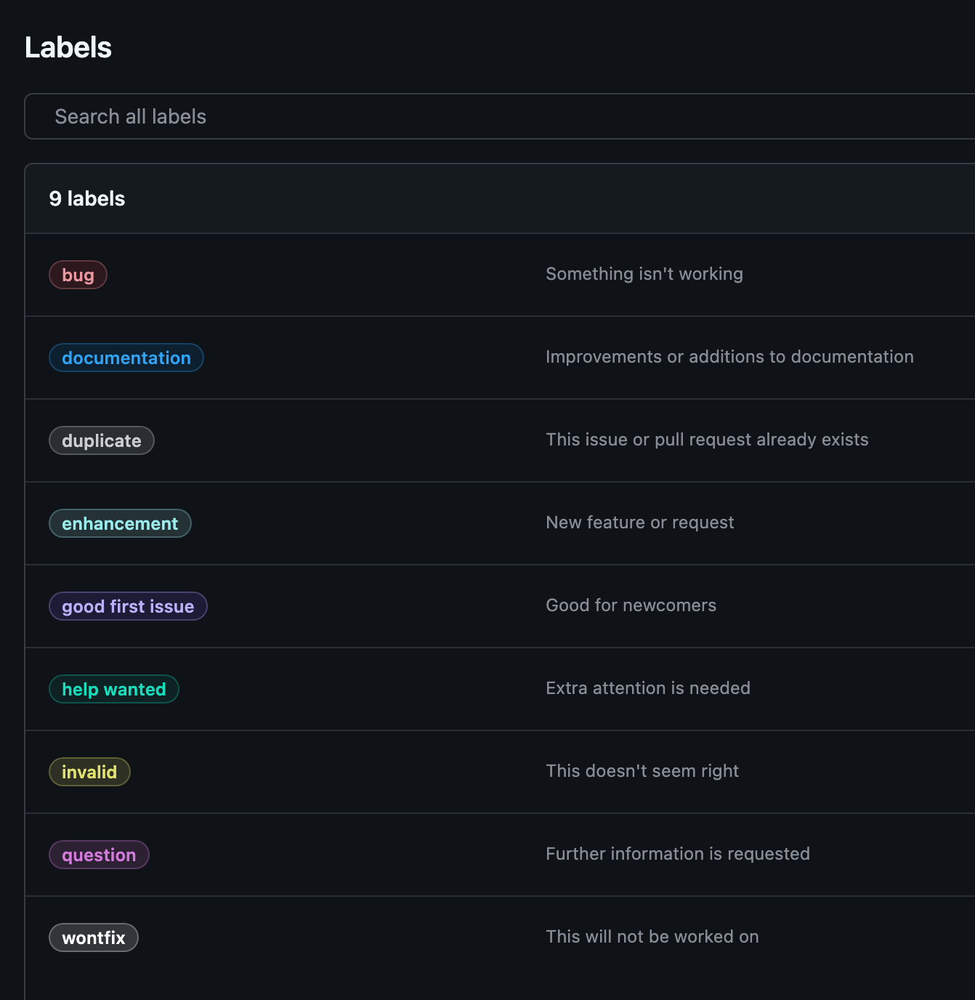

Tasks List
00-Setup
📚 Setup (Overview)
📚 Install Tools
📚 Setup GitHub
01-Working-With-Repo
📚 Working-With-Repo (Overview)
📚 Creating a Repository (Web)
📚 Creating a Repository (MCP)
📚 Creating a Repository (gh)
📚 Cloning a Repository
📚 Making Changes
02-Working-With-PR
📚 Pull Requests (Overview)
📚 Creating a PR (Web)
📚 Creating PR (MCP)
📚 PR - Track Changes
📚 PR - Commit Changes
📚 PR - Code Review
📚 PR - Track Review
📚 PR - Template
📚 PR - CODEOWNERS
03-Configuration
📚 Configuration (Overview)
📚 Template Repository
📚 Ruleset
📚 CodeScan
04-Collaboration
📚 Collaboration (Overview)
📚 Issues Management
📚 Wiki Documentation
📚 Discussions & Community
📚 Projects & Workflows
📚 Teams & Permissions
📚 Notifications
📚 Advanced Features
📚 GitHub Pages
Setup
Lab 00: Setup
⚙️ This lab will guide you through the essential steps to prepare your environment for working with Git and GitHub.
⚙️ By the end of this lab, you will have the necessary tools installed and your GitHub account configured.
⚙️ After completing this lab, you will be prepared to start working with repositories.
Lab Contents
Summary
By completing this lab you will be able to:
✅ Installing required tools (Git, GitHub CLI)
✅ Setting up your Git identity
✅ Creating and configuring your GitHub account
✅ Setting up SSH keys for secure, passwordless authentication
Installing Tools
About this Guide
This guide will walk you through installing git, creating a GitHub account and configuring it for the first time.
1. Installing Git
- First, you need to install Git locally.
Installing Git
Download and install from git-scm.com.
2. Installing gh
- To work with GitHub from your computer, you can use the optional GitHub CLI (
gh) tool to interact with GitHub directly from your terminal. - Click on the section below to expand it
Installing GitHub CLI
Download and install from git-scm.com.
3. Set Up Your Git Identity
- In order to use Git and GitHub effectively, you need to configure your Git identity.
- Your Git identity is defined by your name and email address, which will be associated with your commits.
-
Open your terminal and run the following commands to set your global Git configuration:
4. Tools Used
- GitHub Web: Web browser and GitHub account
- GitHub CLI: GitHub CLI installed (
ghcommand) - GitHub MCP: VS Code with GitHub Copilot MCP extension
Feature Comparison
| Feature | GitHub Web | GitHub CLI | GitHub MCP |
|---|---|---|---|
| Ease of Use | Beginner-friendly | Developer-focused | AI-assisted |
| Speed | Medium | Fast | Very Fast |
| Automation | Limited | High | Very High |
| Customization | Good | Excellent | Good |
| Offline Capability | No | Yes | No |
| Bulk Operations | No | Yes | Limited |
Setup GitHub
About this Guide
This guide will walk you through setting up your GitHub account and configuring it for the first time.
1. Create GitHub Account
- Go to https://github.com/.
- Click Sign up in the top-right corner.
- Enter your email address and click Continue.
- Create a strong password and click Continue.
- Choose a username (this will be your public identity on GitHub).
- Follow the prompts to verify your account (you may need to solve a puzzle or enter a code sent to your email).
- Choose your plan (the free plan is sufficient for most users).
- Complete the setup by answering a few questions (optional) and click Complete setup.
2. Verify Your Email Address
- Check your email inbox for a message from GitHub.
- Click the verification link in the email to activate your account.
3. Set Up Your Profile
- Click your profile icon in the top-right and select Your profile.
- Click Edit profile to add your name, bio, location, and profile picture.
- Save your changes.
4. Generate SSH Key
- When working with Git and GitHub, it’s a good idea to set up SSH keys for secure authentication.
-
SSH keys are a pair of cryptographic keys that can be used to authenticate to GitHub without needing to enter your username and password every time.
-
In your terminal, run:
-
This will create two files:
File Description 
~/.ssh/id_rsaYour private key (keep this secret) 
~/.ssh/id_rsa.pubYour public key (can be shared) # Example output $ ssh-keygen -t rsa -C "your-email@example.com" Generating public/private rsa key pair. Enter file in which to save the key (/root/.ssh/id_rsa): Enter passphrase (empty for no passphrase): Enter same passphrase again: Your identification has been saved in /root/.ssh/id_rsa Your public key has been saved in /root/.ssh/id_rsa.pub <<< <<< <<< This is the key you need The key fingerprint is: SHA256:47MfTsMWlEN8PYpSGvYWlLd4u4fE4njqHrs53+oxEZM your-email@example.com The key`s randomart image is: +---[RSA 3072]----+ | oo. . | | o.=oo o | | . =E* o . | | o.=++ | | Sooo . | | . o.o+ | | +oOo o | | oXo*o . | | oOO*... | +----[SHA256]-----+ -
Press Enter to accept the default file location and do not set a passphrase or you will be prompted to enter it each time you use the key.
5. Add your SSH to ssh-agent
- If you are using Windows, make sure you have Git Bash installed.
- If you are using Linux, make sure you have the
ssh-agentpackage installed. - If you are using macOS, you can use the built-in
ssh-agent. - Open Terminal and run:
6. Add your SSH to GitHub
- Copy your public key to your clipboard:
- Go to GitHub site > Settings > SSH and GPG keys > New SSH key.
- Paste your key, give it a title, and save.
Adding ssh key using gh
- You can also use gh using:
gh repo deploy-key - docs:
 https://cli.github.com/manual/gh_ssh-key_add
https://cli.github.com/manual/gh_ssh-key_add
https://cli.github.com/manual/gh_repo_deploy-key
7. Test Your Setup
-
Run the following command to test your SSH connection:
-
You should see a message like:
Repositories
Lab 01: Working With Repositories
⚙️ This lab guides you through the essential tasks for working with GitHub repositories
⚙️ You will learn how to create, clone, modify, commit, and push changes to repositories using different methods and tools.
Lab Contents
🆕 Creating a Repository
🌠Creating a Repository (Web)
🖇 Creating a Repository (MCP)
 Creating a Repository (gh)
Creating a Repository (gh)
🌿 Creating Branches
🧬 Cloning a Repository
📠Making Changes
Summary
By completing this lab, you will be able to:
✅ Create new repositories using multiple methods (MCP, Web, CLI)
✅ Clone repositories to your local machine
✅ Make and track changes to files
✅ Commit your work with meaningful messages
✅ Push your changes to GitHub for collaboration
Creating a GitHub Repository Using GitHub Web
⚙️ This guide will walk you through the process of creating a new repository on GitHub using the web interface.
⚙️ Follow the steps below to set up your project repository quickly and efficiently.
Prerequisites
- A GitHub account (Sign up here if you don’t have one)
- A web browser (e.g., Chrome, Firefox, Safari)
Task: Create a new GitHub repository
1. Creating a New Repository
- Open your web browser and go to https://github.com.
- Click Sign in at the top right corner and enter your credentials.
- Once logged in, click the
Repositoriestab. - Click on the New button to create a new repository.
- Fill in the repository details as prompted.
- Owner: Choose your personal account or an organization you belong to.
- Repository name: Enter a unique name for your repository (e.g.,
my-first-repo). - Description (optional): Add a short description of your project.
- Visibility:
- Public: Anyone can see this repository.
- Private: Only you and people you explicitly share with can see this repository.
- (Optional) Initialize this repository with:
- Add a README file: Recommended for project documentation.
- .gitignore: Choose a template if you want to ignore certain files.
- Choose a license: Select a license for your project.
2: Create the Repository
- Review your settings.
- Click the Create repository button at the bottom of the page.
Additional Resources
Creating a GitHub Repository Using GitHub MCP
⚙️ This guide explains in detail how to create a new GitHub repository using the GitHub Copilot Model Context Protocol (MCP) extension installed in Visual Studio Code.
⚙️ The MCP extension allows you to automate repository management tasks, including repository creation, directly from the VS Code interface using natural language prompts.
Prerequisites
- A GitHub account (Sign up here if you don’t have one)
GitHub accountwith permission to create repositories- A web browser (e.g., Chrome, Firefox, Safari)
Visual StudioCode installed on your computer- The
GitHub Copilot MCPextension installed in VS Code
Task: Create a new GitHub repository
1. Install (MCP Extension)
- Open Visual Studio Code.
- Go to the Extensions view (
Ctrl+Shift+XorCmd+Shift+Xon Mac). - Search for
GitHub Copilot MCPand click Install, or go to https://code.visualstudio.com/mcp - Verify the installation by checking if the extension appears in the list of installed extensions.
- Verify the MCP server by opening
GitHub Copilot chat, clicking on the settings icon, and ensuring the server status is “Running”.
2. Authenticate with GitHub
- After installation, you may be prompted to sign in to your GitHub account.
- Follow the on-screen instructions to complete authentication.
3. Open the Copilot Chat
- Click on the Copilot icon in the sidebar or open the Copilot Chat panel from the Command Palette (
Cmd+Shift+P> “Copilot: Chat”) - Verify that the MCP is enabled.
Verify MCP srver

4. Create repo from Prompt
- In the Copilot Chat panel, enter a prompt such as:
Prompt to create GitHub repository using GitHub Copilot MCP
- You can customize the prompt to include details like description, visibility (public/private).license, and more. Here are some example prompts:
5. Verify (VsCode)
- In the VsCode Github Copilot Chat panel, you should see something like:

6. Verify (GitHub)
- Navigate to your GitHub account and go to the “Repositories” tab.
- You should see the newly created repository “GitLab-MCP-Repo” listed there.
- Click on the repository to view its contents and verify that the
READMEand.gitignorefiles have been created.

References
Creating a GitHub Repository Using gh
- This guide explains two ways to create a repository on GitHub using GitHub CLI (
gh).
Prerequisites
- A GitHub account (Sign up here if you don’t have one)
- GitHub CLI (
gh) installed - Git installed (Download here)
- Authentication with
gh auth login
Task: Create a new GitHub repository
1. Authenticating with (gh)
- Open your terminal and authenticate if you haven’t already.
-
Execute the following and follow the prompts to log in via browser or SSH key.
### Authenticating with GitHub CLI ## You should see prompts like these: ? Where do you use GitHub? GitHub.com ? What is your preferred protocol for Git operations on this host? SSH ? Upload your SSH public key to your GitHub account? /Users/xxxx/.ssh/id_rsa.pub ? Title for your SSH key: GitHub CLI ? How would you like to authenticate GitHub CLI? Login with a web browser ! First copy your one-time code: XXXX-XXXX Press Enter to open https://github.com/login/device in your browser...
2. Create a new repository:
-
Create a new repository using the following command:
-
You should see output like this:
3. Verify creation:
-
Validate the repository creation:
-
This should open your new repository in your browser.
Additional Resources
Creating Branches Using GitHub GUI
- This guide explains how to create branches in a GitHub repository using the GitHub web interface (GUI). Branching allows you to work on new features, bug fixes, or experiments in isolation from the main codebase.
Task: Create Branches and verify
1. Navigate to Your Repository
- Go to github.com and sign in.
- Click on your repository from the list or search for it.
2. Open the Branch Selector
- At the top left of your repository page, locate the branch selector dropdown (usually says
mainorgh-pages). - Click the dropdown to view existing branches.

3. Create a New Branch
- Create 2 branches:
bugfix-branch,feature-branch. - In the branch selector, type the name of your new branch
- GitHub will show an option:
Create branch: <your-branch-name>from<current-branch>. - Click this option to create and switch to the new branch.
4. Verify the New Branches
- The branch selector should now display your new branch name.
- Click on the
Branchestab under theCodesection to view all branches in the repository. - Verify that your new branches (
bugfix-branch,feature-branch) are listed.

Additional Resources
Cloning a GitHub Repository
- This guide explains how to clone a repository from GitHub to your local machine using the GitHub website and Git.
- Clone “downloading” the repository to your local machine.
- This allows you to work on the project locally and push changes back to the remote repository.
Task: Clone the repository locally
1: Find the Repository
- Go to https://github.com and log in.
- Navigate to the repository you want to clone.
2: Copy the Repository URL
- Click the green Code button on the repository page.
- Choose the desired protocol:
- HTTPS (recommended for most users)
- SSH (requires SSH key setup from setup step 1)
- GitHub CLI
- Click the clipboard icon to copy the URL.
3a: Clone the Repository Locally (CLI)
- Open your terminal or command prompt.
- Run the following command, replacing
<URL>with the copied repository URL: - A new folder with the repository’s name will be created in your current directory.
3b: Clone the Repository (VSCode)
- Open Visual Studio Code.
- Go to the Source Control view (
Ctrl+Shift+GorCmd+Shift+Gon Mac). - Click on the “Clone Repository” button.
- Paste the copied repository URL and choose a local directory.
- Click “Clone” to create a local copy of the repository.
4: Start Working
- Change into the repository directory:
- You can now start working with the code locally.
Additional Resources
Making Changes in a GitHub Repository
- This guide explains how to make changes to files in your local copy of a GitHub repository.
- We will use new branch for our changes
Prerequisites
- A cloned copy of the repository on your computer
- A text editor or IDE
- Git knowledge - working with branches
Task: Create and push changes to GitHub
Step 1: Open the Repository
- Open your terminal and navigate to the repository folder:
- Open the project in your IDE (e.g., VS Code).
Step 2: Edit Files
- Create a new branch for your changes, or use an existing one from previous steps:
- Use your editor to add, modify, or delete files as needed.
- Save your changes.
Step 3: Stage Changes
-
Stage the changes for commit:
Step 4: Check Status
- Track changes made on your branch:
- In the terminal, run: . In your IDE, check the Git panel to see the changes.
Step 5: Commit the Changes
- Run the following command, replacing the message with a short description of your changes:
Step 6: Check Commit History
- To view your commit history, run:
Step 7: Check Remote Repository
- In your terminal, run:
- Ensure the correct remote URL is set (usually named
origin).
Step 8: Push Your Changes
- To push your changes to the main branch, run:
- You will be prompted to set the upstream branch.
- Follow the on-screen instructions to complete the process.
Step 9: Verify on GitHub
- Go to your repository page on GitHub.
- Confirm that you see your branch listed in the branch dropdown or in the main branch view.
Pull Requests
Lab 02: Working with Pull Requests
⚙️ This lab covers the complete workflow of working with pull requests in GitHub
Lab Contents
🧰 Opening PR
🚦 Opening PR - Web
🚦 Opening PR - MCP
🚦 Tracking Changes in a PR
🚦 Committing Changes in a PR
🚦 Code Review (Web)
🚦 Tracking Review Feedback
🚦 PR Template Usage
🚦 Implementing CODEOWNERS
Learning Objectives
By completing this lab, you will be able to:
-
Pull Request Creation
✅ Create pull requests using GitHub Web, CLI, and MCP
✅ Write effective PR titles and descriptions
✅ Add appropriate reviewers and labels -
Code Review Process
✅ Conduct thorough code reviews
✅ Provide constructive feedback
✅ Manage the approval workflow
✅ Handle review responses and iterations -
Collaboration Best Practices
✅ Follow team workflows and conventions
✅ Use advanced GitHub features effectively
✅ Troubleshoot common PR issues
Opening Pull Requests via GitHub Web Interface
This guide explains how to create pull requests using the GitHub web interface. This is the most visual and user-friendly method for creating pull requests.
Prerequisites
- A repository with at least one branch containing changes
- Proper authentication setup with GitHub
- Your feature branch has been pushed to the remote repository
Task: Create pull request on GitHub
1. Navigate to Pull Request
- Go to your repository on GitHub.com
- Navigate to the “Pull requests” tab
2. Create Pull Request
- Click the “Compare & pull request” button (appears automatically after pushing a new branch)
]
OR
- Navigate manually:
- Click the “Pull requests” tab
- Click “New pull request”
- Select the base branch (usually
mainormaster) - Select your feature branch as the compare branch
- Click on
Create pull request
 ]
]
3. Fill Pull Request Details
- Title: Provide a clear, descriptive title
-
Description: Include detailed information:
For example:
- Why the change is needed.
- What changes were made.
- How to test the changes.
- Additional context or screenshots.
-
Reviewers: Add reviewers by typing their GitHub usernames
-
Assignees: Assign yourself or team members.
-
Labels: Add appropriate labels (feature, bugfix, etc.).
-
Projects: Link to project boards if applicable.
-
Milestone: Associate with project milestones.
4: Choose PR Type
-
Choose PR type:
PR Type Description Create pull request For standard PRs ready for review. Create draft pull request For work-in-progress. -
Click the “Create pull request” button to submit your PR.
Opening Pull Requests via GitHub MCP Extension
- This guide explains how to create and manage pull requests using the GitHub Model Context Protocol (MCP).
- MCP allows you to create PRs using natural language commands.
Prerequisites
- Visual Studio Code installed
- GitHub Copilot MCP extension installed and configured (Including Authentication)
- Proper authentication setup with GitHub
- Your feature branch has been pushed to the remote repository
1. Install and Setup MCP
- Open Visual Studio Code
- Go to the Extensions view (
Ctrl+Shift+XorCmd+Shift+Xon Mac) - Search for
GitHub Copilot MCPand click Install - Verify the installation by checking if the extension appears in the list of installed extensions
2. Authentication
- After installation, you may be prompted to sign in to your
GitHubaccount - Follow the on-screen instructions to complete authentication
- Verify the MCP server by opening GitHub Copilot chat and checking the server status
3. Create PR from Prompt
- In the Copilot Chat panel, enter a prompt such as:
Prompt to create PR using GitHub Copilot MCP
Using GitHub Copilot MCP
Create a new pull request from “git-labs-branch” to “main”
Title: “Add user authentication feature”
Description: “This PR is auto generated using MCP”
Add reviewers: @me
Add labels: mcp, bugfix, high-priority
Assign to: @me
-
You can customize the prompt to include details like description, visibility (public/private).license, and more. Here are some example prompts:

4. Updating Existing PRs Examples
Prompt to update PR using GitHub Copilot MCP
### 1. Update title
Update my pull request title to "Improved user authentication feature"
### 2. Add reviewers
Add reviewers alice.cooper and @backend-team to pull request #123
### 3. Update description
Update PR #456 description to include:
"## Changes
- Fixed validation bug
- Added unit tests
- Updated documentation"
### 4. Add commits
Ive made some changes to my feature branch.
Please update pull request #123 with these new commits.
### 5. Add comment
Add a comment to my current pull request explaining that I've addressed the review feedback and added unit tests.
5. Viewing PR Information
- Keep working with the MCP to find out details about your pull requests
-
You can ask for information about your pull requests, such as:

6. AI MCP PR prompts Suggestion
Create PR from Templates
Create PR for all my bug-fix
Update PR
Automation Workflows
Best Practices for GitHub MCP
Workflow Integration
- Consistent Naming: Use consistent branch and PR naming conventions
- Template Usage: Develop standard prompts for your team
- Context Awareness: Provide relevant context in your requests
- Verification: Always review MCP suggestions before confirming
Additional Resources
Tracking Changes in a Pull Request
- This guide explains how to review the changes of PR and update them.
Prerequisites
- Visual Studio Code installed
- GitHub Copilot MCP extension installed and configured (Including Authentication)
- Proper authentication setup with GitHub
- Your feature branch has been pushed to the remote repository
Task: Free style exploration - PR GUI
1. Review Changes on GitHub
-
Pull request sections
Tab Name Description Files Changed Shows a list of all the files modified in the pull request. You can click on each file to see the specific changes. Commits Lists all the commits made to the branch. You can click on each commit to view its details. Checks Displays the status of automated checks and tests run on the pull request. Conversation Shows the discussion and comments related to the pull request.
- Open your web browser and navigate to your GitHub repository.
- Locate the pull request associated with your branch.
- Click on the pull request to open its details page.
- Review the changes.
2. Review PR GUI
Task: Play with the PR GUI to get familiar with it
- Play with the PR GUI to get familiar with it
- Navigate between the different tabs
- Explore the different views and options available.
- Explore the buttons
3. Make Manual Changes
Task: Make Manual Changes
- Change the reviewer
- Add new comments
- Add users as mention(s) by typing
@at the comment window - Add labels
- Add Assignees
- Add team as reviewers
- Change the PR title
- Change the base branch
- Close and Re-Open the PR
Adding and Tracking Changes with GitHub Pull Requests
- This guide provides a step-by-step process for adding code, reviewing commits, adding more code, reviewing updates, and adding comments in a GitHub Pull Request (PR) web site.
Task: Add more changes and review the PR
1. Adding Code
-
Checkout your local branch:
-
Make changes to your local repository files.
-
Stage the changes:
-
Commit the changes with a descriptive message:
-
Push the changes to the remote branch:
2. Reviewing the Commits
- Navigate to your GitHub repository in a web browser.
- Open the pull request associated with your branch.
- Click on the Commits tab to view all commits made to the branch.
- Review the commit messages and details to ensure they accurately describe the changes.
The PR should display the updated file contents and commit history.
3. Adding More Code
- Make additional changes to your local repository files.
- Stage the changes:
- Commit the changes with a descriptive message:
- Push the new changes to the same branch:
Once again, the PR should display the updated file contents and commit history.
4: Reviewing the Updates
- Refresh the pull request page on GitHub.
- Navigate to the Files Changed tab to review the updated changes.
- Verify that the new changes align with the pull request’s goals and do not introduce issues.
Performing a Full Code Review on GitHub Web
- This guide provides a detailed, step-by-step breakdown of how to perform a complete code review using the GitHub web interface.
- It covers adding reviewers and teams, making comments, and submitting a review. Screenshots are referenced for clarity.
Task: Perform a Code Review
1. Add Reviewers and Teams
Notes about Teams
Teams must be configured in your GitHub organization to appear in the list.
- Go to your repository on GitHub
- Click on the “Pull requests” tab
- Select the pull request you want to add reviewers to
- Look for the “Reviewers” section in the right sidebar
- Click the gear icon (⚙️) next to “Reviewers”
- Search for and select reviewers by:
- Username
- Full name
- Team name (if you have access to teams) (e.g.,
@organization/team-name)
- Click on the reviewer name to add them
2. Adding Comments
- In the Files Changed tab, scroll through the list of changed files to locate the specific lines of code you want to comment on.
- Hover your mouse over the line number where you want to add feedback.
- A blue + icon will appear to the left of the line.
- Click the + icon to open the inline comment editor for that line or code block.
Tip
- In the comment box, write your feedback, question, or suggestion.
You can use Markdown formatting, reference other issues or pull requests with#, and mention users or teams with@.
- You can also select multiple lines to comment on a code range.
3. Submit Comments
- Choose how to submit your comment:
- Click Add single comment to immediately post your feedback.
- Click Start a review if you want to leave multiple comments before submitting them all together as a review. This is useful for providing comprehensive feedback in one go.
- If you started a review, continue adding comments throughout the code as needed. All comments will be collected in your pending review.
4. Review Changes
-
When finished, click the Review changes button at the top right of the Files Changed tab.
Option Description Comment Submit your feedback without approving or requesting changes. Approve Indicate the code is ready to merge. Request changes Block merging until issues are addressed. (Summary comment) Optionally, add a summary comment for the overall review. -
Click Submit review to finalize and send your comments to the pull request author and other reviewers.
PR Notes
You can also add comments to entire files or outdated diffs by clicking the appropriate options in the Files Changed tab.
All comments and review activity will appear in the Conversation tab for full visibility.
Whenever you have an open PR on a specific branch, make sure to push your changes to the same branch as the pull request.
The pull request will automatically update with your new commits.
Track Review Status and Respond
- This lab explains how to track a pull request’s review status, respond to feedback, handle CI checks, and prepare a PR for merge.
Task: Track Review Status and Respond (Comments)
1. Where to Check Status
Use these areas on the PR page to see review progress and merge readiness.
| Area | What you’ll see |
|---|---|
| Conversation tab | Full timeline of activity (comments, reviews, commits, CI events) show open/resolved state and who resolved them. |
| Reviewers (sidebar) | Requested reviewers/teams, who approved, who requested changes, and “Re-request review†actions. |
| Checks tab | CI status, required and optional checks, and detailed logs for failures. |
| Merge box (bottom) | Mergeability summary: approvals required, checks passing/failing, branch conflicts, and protection rules. |
| Files changed | Open/Outdated/Resolved threads inline, “Viewed†checkboxes, file filter, diff settings. |
2. Respond to Review Feedback

- Open the Conversation tab and review all open threads that need action.
- Go to Files changed and expand files with comments.
- Play around with the review and reply/comment on the feedback.
- Click Reply, answer/comment on the feedback.
- Accept a suggested change if provided.
- When required, click Resolve.
- Reopen Resolved threads if needed.
Tip
Use diff settings to speed up review:
- Hide whitespace changes (A very useful setting for ignoring formatting changes)
- Expand context (Show more lines)
- Toggle rich diff for binaries like images/Markdown
- Mark files as Viewed to track progress (Useful when you are working on multiple files)
3. Update the PR with Fixes
- Make your tweaks on the same branch (e.g.,
git-labs-branch). - Commit and push, the PR updates itself and you’ll see a refresh banner.
- If you see a
Refreshbutton, click it to update the PR view.
Creating and Using Pull Request Templates
- This lab shows how to create and use PR templates to standardize pull request descriptions and ensure consistent information across your team.
Task: Create and Use a PR Template
1. Understanding PR Templates
- PR templates automatically populate the description field when someone creates a new pull request.
- They help us with the following:
- Maintain consistent information across all PRs
- Ensure required details aren’t missed
- Facilitate faster code reviews with better context
- Provide clear linking between PRs and issues
2. Create the Template File
- Create a new branch (So you can work on the template without affecting the main branch).
- In your repository root, create a
.githubfolder if it doesn’t exist. - Inside
.github, create a file namedpull_request_template.md. - Add your template content using markdown syntax.
The file structure should look like:
3. Template Content
Here’s a comprehensive template that covers most use cases:
## Description
<!-- Briefly describe the changes introduced by this PR -->
## Related Issue
<!-- Link the issue this PR closes or relates to , if any-->
Fixes #<issue_number>
## Type of Change
<!-- Leave only the relevant one and delete the others -->
- [ ] Bug fix 🐛
- [ ] New feature ✨
- [ ] Documentation update 📚
- [ ] Enhancement 🛠️
- [ ] Refactoring ♻️
- [ ] Hotfix 🔥
- [ ] Other (please describe):
## Checklist
- [ ] I have tested my changes locally
- [ ] I have updated documentation if needed
- [ ] My code follows the project's style guidelines
- [ ] I have linked the related issue
- [ ] I need to go home 😊
## Screenshots (if applicable)
<!-- Add before/after screenshots for UI changes -->
## Additional Notes
<!-- Anything else reviewers should know -->
4. Create the Template File in Your Repo
Creating the Template File
Make sure you create the template file in the correct location.(.github folder) or else it will not work.
- Switch to the
mainbranch. - Switch to your repository root folder.
- Create new file with the specific name
.github/pull_request_template.md - Copy the template content from above into the file.
- Commit and push the changes
5. Using the Template
- Make changes, add, commit & push your code.
- Create a new pull request as usual.
- The template will automatically appear in the description field.
Task: Create and Use Custom PR Template
6. Multiple Templates
You can create different templates for different types of PRs:
.github/
├── PULL_REQUEST_TEMPLATE/
│ ├── bug_fix.md
│ ├── feature.md
│ └── documentation.md
└── pull_request_template.md (default)
- Create a new file for each template in the
.github/PULL_REQUEST_TEMPLATE/directory. - Write your template content using markdown syntax.
- You can set a template name and description:
-
Add, commit, and push your changes.

ISSUE_TEMPLATE
- GitHub support Issue Template as well.
- Same concept but in different folder.
.github/ISSUE_TEMPLATE/
7. Using PR template
Default Template
In order to use the default PR template, simply create a new pull request as you normally would.
Custom Template
In order to use a custom PR template, you can specify the template in the URL when creating the PR.
###
### https://github.com/owner/repo/compare/<branch to>...<branch_from>?template=<template>
https://github.com/owner/repo/compare/main...feature?template=feature.md
8. Testing Your Template
- Create a test branch:
- Open a new PR from this branch to see the template in action.
- Verify all sections appear correctly and make adjustments if needed.
Implementing CODEOWNERS for Pull Request Automation
🧩 This hands-on lab walks you through adding a CODEOWNERS file to automatically assign reviewers and enforce ownership rules on pull requests.
1. Using CODEOWNERS
CODEOWNERSis a file that allows you to define individuals or teams responsible for specific parts of your codebase.- When changes are made to those areas, the designated code owners are automatically requested for review.
- This helps ensure that the right people are reviewing changes to critical parts of the code.
CODEOWNERScan also be used to enforce review policies, such as requiring approval from code owners before merging.
How CODEOWNERS Works
- Automatically assigns reviewers based on file changes
- Ensures domain experts review relevant code
- Can be combined with branch protection rules
- Supports teams and individual users
-
Create
.github/CODEOWNERSin your repository:
2. CODEOWNERS - Files location
GitHub search for the first matching file in following order:
.github/CODEOWNERSCODEOWNERSin the repository rootdocs/CODEOWNERS
Tip
Recommended: Use .github/CODEOWNERS for consistency with other meta files (workflows, templates).
3. CODEOWNERS - Pattern
| Pattern Type | Example | Matches |
|---|---|---|
| Single file | README.md |
Exact file |
| Directory (recursive) | src/ |
Everything under src/ |
| Specific extension | *.md |
All Markdown files |
| Nested path | app/api/ |
Files in that folder & subfolders |
Escaping # |
\#file.txt |
File literally named #file.txt |
| Comment line | # owners of infra |
Ignored |
| Last match wins | Later entries override | Use ordering intentionally |
4. CODEOWNERS - Example
-
Create directory (if needed):
-
Add file
.github/CODEOWNERS: -
Add to git & push:
5. CODEOWNERS - Enable
If you have not enabled branch protection yet:
- Go to: Repository → Settings → Rules → Rulesets (or Branches > Branch protection)
- Create / Edit your ruleset targeting
main - Enable the following
- Require a pull request before merging
- Require approvals: set to
1(or more) - Require review from Code Owners
- Dismiss stale approvals (recommended)
- Require conversation resolution
- Save / Activate the ruleset
6. CODEOWNERS - Verify (Test)
- Open a pull request
- In the PR sidebar you should see:
- Reviewers automatically populated with teams/users from matching patterns.

7. CODEOWNERS - Checklist
Use this checklist to validate success:
- CODEOWNERS exists at
.github/CODEOWNERS - Global
*rule defined - At least one team + one individual user referenced (optional)
- Branch protection requires Code Owner review
- Test PR auto-assigned reviewers
- Specific path override tested
Configuration
Lab 03: Configuration
⚙️ This lab guides you through core repository configuration that scales collaboration and governance.
⚙️ You will set up template repositories, branch / ruleset policies, security & automation (Code / Secret / Dependency scanning), and collaboration standards.
Lab Contents
 Template Repository
Template Repository
 Rulesets
Rulesets
Security Scanning
Summary
By completing this lab you will be able to:
✅ Publish and consume repository templates for fast, consistent project starts
✅ Design and enforce branch & ruleset policies tailored to branch purpose
✅ Automate security posture (CodeQL, Secrets, Dependency Review) with gated merges
✅ Integrate scanning outputs into PR workflows & branch protection
✅ Lay groundwork for scalable collaboration (governance & ownership)
Creating a Template Repository
- This lab shows how to create and use GitHub template repositories for new repositories.
- This lab will not cover all the possible configurations and customizations for template repositories.
1. Template Repositories. Why?
Template Benefits
- Template repositories are special GitHub repositories that serve as blueprints (bootstraps) for creating new repositories.
-
Some of the templates include:
- Consistent project structure across teams and organizations
- Pre-configured settings like CI/CD pipelines, linting rules, and development tools
- Boilerplate code and documentation templates
- Faster project initialization without manual setup
- Best practices and guidelines for project setup
- Customizable workflows to fit specific project needs
- Integration with third-party tools and services
- Automated setup scripts for quick environment configuration
- Sample data and fixtures to help kickstart development
- Documentation and tutorials for using the template effectively
- Issue and pull request templates for consistent contributions
- Custom scripts for common tasks (e.g., setup, testing)
- Environment configuration files (e.g.,
.env.example)
When someone creates a new repository from a template, they get a clean copy with all the template’s files but none of its Git history.
2. Prepare Your Template Repository
Lets create a new repository on GitHub to serve as our template.
- Go to GitHub.com and sign in to your account.
- Click the ”+” icon in the top-right corner and select “New repository”.
- Choose a descriptive name like
my-project-templateorreact-app-template. - Add a clear description explaining what the template is for.
- Make the repository Public (templates work best when accessible).
- Initialize with a README file.
- Click “Create repository”.
New Repository
Template Repository
3. Create Repository Template Files
-
A basic template project should look like:
root / # Repository root ├── .github / # GitHub-specific configuration │ ├── workflows / # GitHub Actions workflow definitions │ │ └── ci.yml # CI pipeline (build/test/lint) │ ├── ISSUE_TEMPLATE/ # Issue form/templates │ │ ├── bug_report.md # Bug report issue template │ │ └── feature_request.md # Feature request issue template │ └── pull_request_template.md # PR description guidance ├── docs/ # Project documentation │ ├── CONTRIBUTING.md # How to contribute (standards, process) │ └── SETUP.md # Local environment / install steps ├── src/ # Application/source code │ └── (your project files) # Replace with actual modules/packages ├── tests/ # Test suite root │ └── (test files) # Unit/integration/e2e tests ├── .gitignore # Ignore rules for Git ├── LICENSE # Project license (e.g., MIT, Apache-2.0) ├── README.md # Overview, usage, badges, quick start └── package.json (or equivalent) # Dependency & script manifest (npm, etc.) -
Create any content you want to include in the template repository
- Add and commit your changes
4. Enable Template Mode
Note
In order to use this repository as a template, you need to enable template mode.
- Navigate to your repository on GitHub.
- Click the “Settings” tab (top navigation bar).
- Scroll down to the “General” section.
- Find the “Template repository” checkbox.
- Check the box to “Template repository”.
- Click “Save” to confirm the changes.
5. Use the Template Repository
- Log into GitHub.
- Navigate to your template repository.
- Click the green “Use this template” button (appears instead of “Clone”).
- Select “Create a new repository”.
- Fill in the new repository details:
- Repository name: Choose a descriptive name
- Description: Describe the specific project
- Visibility: Public or Private as needed
- Choose whether to “Include all branches” (usually keep unchecked).
- Click “Create repository from template”.
- Your new repository will be created with all files and settings from the template.
GitHub Rulesets
- Rulesets are the modern way to enforce protections on branches across a repository (or organization).
- Use a branch ruleset to standardize requirements like PR reviews, status checks, commit signing, and more.
Understanding Ruleset / Branch Protection
Branch protection rules help maintain code quality by:
- Preventing direct pushes to important branches like
mainordevelop - Requiring pull request reviews before merging code
- Enforcing status checks from CI/CD pipelines
- Restricting who can push to protected branches
- Maintaining a clean commit history with merge strategies
- Ensuring code review processes by forcing pull request reviews
- Enabling automated testing to catch issues early
- Maintaining a clean commit history with merge strategies
- Enforcing coding standards through automated checks
- Preventing accidental deletions of important branches
1. Create Ruleset
- Open the repository on GitHub and go to Settings
- In the sidebar, select Rules → Rulesets
- Click New ruleset and choose New Branch Ruleset as the target
- Give the ruleset a meaningful name (for example,
Branch Protections - main) - Set Enforcement status → Active / Disabled
- Set Target branches → Add target (which branches the rules apply to):
- Configure Bypass list (optional):
- Add specific users/teams that may bypass, and (if required)
Danger
Bypass rules should be used sparingly and only for trusted users or teams.
Atera Does have bypass rules
2. Approvals
- Set the Require a pull request before merging → Required Approvals
3. Merge Methods
-
Set the Allowed merge methods
Squash
- Recommended for most teams
- Combines all commits into a single commit
- Keeps main branch history clean
- Easy to revert changes
- Provides a clear commit history
- Allows for better collaboration and code review
- Simplifies the process of reverting changes
Rebase
- Replays commits without creating merge commits
- Creates linear history
- Good for small, clean changes
- Allows for easier bisecting of changes
- Supports interactive rebasing
- Requires careful management of commit history
- Not recommended for large feature branches
Merge committing
- Creates merge commits that preserve branch history
- Good for feature branch workflows
- Allows for more complex merge scenarios
- Requires careful management of merge conflicts
- Not recommended for small changes
Merge Strategy Recommendations
Workflow Type Recommended Strategy Benefits Feature branches Squash merge Clean main branch history Hotfixes Rebase merge Fast-forward integration Release branches Merge commit Preserve branch context Small changes Squash merge Reduce commit noise
4. Status Checks
- Set the Require status checks to pass → Require status checks to pass before merging
- Add the required checks
Require status checks to pass before merging
- This ensures that all required checks pass before merging a pull request.
- It helps maintain code quality and prevents broken code from being merged.
- You can select specific checks like:
ci/buildci/testsecurity/code-scanningquality/lintAtera/specific_task
5. Branch Restrictions
- Those are several restrictions you can apply to branches
- Review the rules screen and you can see all the different configured restrictions
Task: Create rules for Development Branch
Pattern: develop or dev
Required reviewers: 1
Status checks: CI tests only
Allow force pushes: No
Task: Create rules for Release Branches
Pattern: release/*
Required reviewers: 2
Status checks: Full test suite
Restrict pushes: Release managers only
Task: Create rules for Feature Branches
Pattern: feature/*
Required reviewers: 1
Status checks: Basic CI
Allow force pushes: Yes (for development)
6. Copilot Code Reviews
- Set the Require a pull request before merging → Automatically request Copilot code review
Code Scann
- This lab walks through configuring GitHub’s core application security features.
- You will enable and tune: Code Scanning (CodeQL), Secret Scanning (incl. Push Protection), and Dependency Review.
- Includes setup, workflow authoring, alert triage, automation, and integration with branch protection.
1. Why These Security Features Matter
Security features help you shift-left by:
- Automatically finding vulnerabilities (CodeQL semantic analysis)
- Preventing leaked credentials before they land in
main(Secret Scanning + Push Protection) - Catching risky dependency changes during code review (Dependency Review)
- Reducing mean-time-to-detect (MTTD) with continuous scanning
- Standardizing security gates via required status checks
- Enabling measurable SLAs for remediation (alerts, severity, timelines)
- Supporting audit & compliance with immutable alert history
2. Prerequisites
| Area | Requirement |
|---|---|
| Permissions | Repository Admin (to enable security & analysis) |
| Repo Visibility | All features free for public repos. Private repos need GHAS for CodeQL & Secret Scanning. |
| Branch Strategy | Protected default branch (e.g. main) |
| Code Languages | CodeQL supports Java, Kotlin, C/C++, Go, C#, Python, Ruby, JS/TS, Swift, etc. |
| CI | CodeQL workflows consume Actions minutes |
Note
If a language is not auto-detected specify explicitly (languages: ['java','python']).
3. Enable Security & Analysis Features
- Navigate to the repository on GitHub.
- Settings → Advanced Security → Code scanning.
- Enable what ever you wish based upon your needs:
- Dependency graph
- Dependabot alerts
- Dependabot security updates (optional)
- Code scanning (Default or Advanced)
- Secret scanning
- Secret scanning: Push protection
- Wait for activation banners.
Note
Dependency Graph must be on for Dependency Review context.

4. Code Scanning (CodeQL)
4.1 Modes
| Mode | Use Case | Effort |
|---|---|---|
| Default | Fast enable, standard query packs | Very Low |
| Advanced (workflow) | Custom build, multi-language, custom packs | Medium |
| SARIF Upload | Integrate external SAST tools | Variable |
4.2 Quick Start (Default)
- Security tab → Code scanning alerts.
- Set up code scanning → Default → Enable CodeQL.
- Initial analysis runs automatically.
- Review alerts when finished.
4.3 Advanced Workflow
Create .github/workflows/codeql.yml:
name: CodeQL
on:
push:
branches: ["main"]
pull_request:
branches: ["main"]
schedule:
- cron: '0 3 * * 1'
jobs:
analyze:
runs-on: ubuntu-latest
permissions:
actions: read
contents: read
security-events: write
strategy:
fail-fast: false
matrix:
language: [javascript, python]
steps:
- uses: actions/checkout@v4
- name: Initialize CodeQL
uses: github/codeql-action/init@v3
with:
languages: ${{ matrix.language }}
# packs: codeql/javascript-queries@latest,codeql/python-queries@latest
# config-file: ./.github/codeql/codeql-config.yml
- name: Autobuild
uses: github/codeql-action/autobuild@v3
- name: Analyze
uses: github/codeql-action/analyze@v3
with:
category: "/language:${{ matrix.language }}"
4.4 Custom Queries
Create .github/codeql/codeql-config.yml:
config-file in init step.
Tip
Add `security-extended` after validating baseline noise.
4.5 Manual Build Example
4.6 Triage Alerts
- Security → Code scanning alerts.
- Filter by severity / language.
- Open alert → inspect data flow.
- Fix or Dismiss (False positive, Won’t fix, Used in tests, Acceptable risk).
- Link fix via PR.
4.7 Suppress in Code (last resort)
4.8 Enforce via Branch Protection
Add CodeQL checks as required status checks after first successful run.
5. Secret Scanning
5.1 Push Protection Flow
- Developer pushes commit with secret.
- GitHub blocks push; shows remediation.
- Developer removes secret (preferred) or bypasses with justification (audited).
5.2 Custom Patterns (GHAS)
Security → Secret scanning → Custom patterns → New pattern.
Example regex: INT-API-[0-9A-F]{32}
Warning
Keep patterns specific to avoid false positives.
5.3 Triage
For each alert: verify exposure, revoke/rotate, optionally rewrite history, resolve with reason.
5.4 SLA Guidance
| Severity | Example | SLA |
|---|---|---|
| High | Cloud root keys | 4 hours |
| Medium | Internal API tokens | 1 business day |
| Low | Test credentials | 3 days |
6. Dependency Review
6.1 Use
Shows added/removed/updated dependencies, vulnerabilities, licenses in PR.
6.2 Workflow (optional gate)
.github/workflows/dependency-review.yml:
name: Dependency Review
on: [pull_request]
permissions:
contents: read
pull-requests: read
jobs:
review:
runs-on: ubuntu-latest
steps:
- uses: actions/checkout@v4
- uses: actions/dependency-review-action@v4
with:
fail-on-severity: high
# allow-licenses: MIT,Apache-2.0
# deny-licenses: GPL-3.0
# comment-summary-in-pr: true
6.3 Dependabot Updates
.github/dependabot.yml:
version: 2
updates:
- package-ecosystem: npm
directory: /
schedule:
interval: weekly
open-pull-requests-limit: 5
- package-ecosystem: pip
directory: /
schedule:
interval: weekly
7. Branch Protection Integration
| Feature | Check Name Example | Action |
|---|---|---|
| CodeQL | CodeQL / Analyze (javascript) | Require |
| Dependency Review | Dependency Review / review | Require |
| Secret Scanning | (none) | Rely on push protection |
Add checks under Branch protection → Require status checks.
8. Alert Review Workflow
| Step | Action | Owner |
|---|---|---|
| Detect | Scan creates alert | Automation |
| Triage | Validate severity | Security Champion |
| Assign | Link issue/PR | Eng Lead |
| Remediate | Patch / rotate | Developer |
| Verify | Confirm closure | Security |
| Report | Metrics & trends | Security Ops |
Tip
Tag security when dismissing or suppressing findings.
9. Advanced Topics
9.1 SARIF Upload (3rd Party)
9.2 Secret Pattern Anchoring
\bAKIA[0-9A-Z]{16}\b
9.3 Noise Reduction
- Start with default packs only.
- Audit dismissals; convert recurring false positives into custom query tweaks.
- Incrementally tighten severity gates.
9.4 License Policy
Use dependency review action allow-licenses / deny-licenses to enforce governance.
10. Metrics
| Metric | Target |
|---|---|
| CodeQL MTTR | < 14 days |
| Secret Exposure Window | < 1 hour high severity |
| Vulnerable Dependency Introduction | 0% High severity |
| False Positive Rate | < 10% |
11. Troubleshooting
| Issue | Cause | Fix |
|---|---|---|
| No CodeQL alerts | Wrong language / no runs | Verify workflow triggers & languages |
| Missing status check | Name mismatch | Copy exact check name post-run |
| Push not blocked | Pattern gap / bypass | Add custom pattern, review bypass logs |
| Slow CodeQL job | Large build | Cache deps / split languages |
| Dependency Review missing | Dependency graph off | Enable in settings |
Note
Some alerts appear only after first successful default branch scan.
12. Next Steps
- Promote workflow & config to template repo.
- Add CODEOWNERS for
.github/workflows/**. - Export alerts weekly (governance dashboard).
- Add security KPIs to sprint review.
By completing this lab you established a proactive security baseline using native GitHub: CodeQL, Secret Scanning, and Dependency-aware reviews. Iterate on queries, secret patterns, and gating policies as the codebase evolves.
Collaboration
Lab 04: Collaboration
👥 This lab guides you through GitHub’s powerful collaboration features that enhance team communication and project management.
👥 You will learn to use Issues, Wiki, Discussions, Projects, Teams, and GitHub Pages for effective collaboration.
Lab Contents
🛠Issues Management
📚 Wiki Documentation
💬 Discussions & Community
📋 Projects & Workflows
👥 Teams & Permissions
🔔 Notifications
⚙️ Advanced Features
🌠GitHub Pages
Summary
By completing this lab you will be able to:
✅ Set up and manage GitHub Issues with templates and labels
✅ Create and maintain comprehensive Wiki documentation
✅ Enable and moderate GitHub Discussions for community engagement
✅ Organize work with GitHub Projects and Kanban boards
✅ Manage team permissions and collaboration workflows
✅ Configure notifications for optimal productivity
✅ Implement CODEOWNERS and automated review processes
✅ Deploy documentation and websites with GitHub Pages
✅ Apply best practices for effective team collaboration
GitHub Issues Management
- This guide covers GitHub Issues setup, templates, labels, and best practices for tracking bugs and feature requests.
- You’ll learn to create structured issue workflows for effective project management.
1. Issues Overview
Issues Benefits
GitHub Issues provide a powerful way to track work on your repository:
- Bug Tracking: Report and track software bugs with detailed information
- Feature Requests: Collect and prioritize new feature ideas from users
- Task Management: Break down work into manageable, trackable units
- Project Planning: Link issues to milestones and project boards
- Team Communication: Discuss solutions and collaborate on fixes
- Documentation: Maintain a searchable history of problems and solutions
- Integration: Connect with pull requests, commits, and automation
- Community Engagement: Allow external contributors to report issues
2. Enable Issues
Private Repositories
Issues are automatically enabled for public repositories but must be manually enabled for private repositories.
- Navigate to your repository on GitHub
- Click “Settings” tab
- Click “General” tab
- Scroll down to “Features” section
- Ensure “Issues” checkbox is checked
3. Create Issue Templates
Issue templates standardize how bugs and features are reported, ensuring you get all necessary information.
3.1. Set Up Templates
- In your repository, navigate to “Settings” → “Features”
- Click “Set up templates” next to Issues
- Choose from predefined templates or create custom ones
3.2. Bug Report Template
Create .github/ISSUE_TEMPLATE/bug_report.md:
---
name: Bug report
about: Create a report to help us improve
title: '[BUG] '
labels: 'bug'
assignees: ''
---
**Describe the bug**
A clear and concise description of what the bug is.
**To Reproduce**
Steps to reproduce the behavior:
1. Go to '...'
2. Click on '....'
3. Scroll down to '....'
4. See error
**Expected behavior**
A clear and concise description of what you expected to happen.
**Screenshots**
If applicable, add screenshots to help explain your problem.
**Environment (please complete the following information):**
- OS: [e.g. iOS]
- Browser [e.g. chrome, safari]
- Version [e.g. 22]
**Additional context**
Add any other context about the problem here.
3.3. Feature Request Template
Create .github/ISSUE_TEMPLATE/feature_request.md:
---
name: Feature request
about: Suggest an idea for this project
title: '[FEATURE] '
labels: 'enhancement'
assignees: ''
---
**Is your feature request related to a problem? Please describe.**
A clear and concise description of what the problem is. Ex. I'm always frustrated when [...]
**Describe the solution you'd like**
A clear and concise description of what you want to happen.
**Describe alternatives you've considered**
A clear and concise description of any alternative solutions or features you've considered.
**Additional context**
Add any other context or screenshots about the feature request here.
3.4. Custom Template
Create .github/ISSUE_TEMPLATE/custom.md:
---
name: Custom issue
about: Describe this issue template's purpose here.
title: ''
labels: ''
assignees: ''
---
**Summary**
Brief description of the issue
**Details**
Detailed explanation of the request
**Acceptance Criteria**
- [ ] Criteria 1
- [ ] Criteria 2
- [ ] Criteria 3
4. Labels and Organization
4.1. Default Labels
GitHub provides default labels, but you should customize them for your project:
- Go to “Issues” tab in your repository
- Click “Labels” button
- Review and edit existing labels
4.2. Recommended Label System
Create a comprehensive labeling system:

Type Labels
bug(red) - Something isn’t workingenhancement(blue) - New feature or requestdocumentation(purple) - Improvements or additions to documentationquestion(pink) - Further information is requested
Priority Labels
priority: critical(dark red) - Critical prioritypriority: high(red) - High priority itemspriority: medium(orange) - Medium priority itemspriority: low(yellow) - Low priority items
Status Labels
status: accepted(green) - Issue accepted for developmentstatus: blocked(red) - Progress is blockedstatus: in progress(yellow) - Currently being worked onstatus: needs review(blue) - Needs review or feedback
Effort Labels
effort: small(light green) - Small effort requiredeffort: medium(yellow) - Medium effort requiredeffort: large(orange) - Large effort requiredeffort: extra large(red) - Extra large effort required
Community Labels
good first issue(green) - Good for newcomershelp wanted(orange) - Extra attention is neededduplicate(gray) - Duplicate of another issuewontfix(white) - Won’t be fixed
4.3. Label Best Practices
- Use consistent colors for label categories
- Keep names short but descriptive
- Document your system in contributing guidelines
- Review and clean up unused labels regularly
5. Milestones
5.1. Create Milestones
- In “Issues” tab, click “Milestones”
- Click “New milestone”
- Fill in milestone details:
- Title: Descriptive name (e.g., “v1.0 Release”)
- Description: What this milestone represents
- Due date: Target completion date
5.2. Milestone Examples
- Version Releases: “v1.0”, “v1.1”, “v2.0”
- Sprint Goals: “Sprint 1”, “Sprint 2”
- Feature Themes: “User Authentication”, “API Improvements”
- Time-based: “Q1 2025”, “January 2025”
5.3. Using Milestones
- Assign issues to appropriate milestones
- Track progress with the milestone view
- Close milestones when all issues are completed
- Review scope regularly and adjust as needed
6. Issue Workflow
6.1. Creating Quality Issues
For Bug Reports:
- Clear title that summarizes the problem
- Detailed description of what happened
- Steps to reproduce the issue
- Expected vs actual behavior
- Environment information (OS, browser, version)
- Screenshots or logs if applicable
For Feature Requests:
- Descriptive title of the desired feature
- Problem statement explaining the need
- Proposed solution with details
- Alternative approaches considered
- Use cases and examples
6.2. Issue Management Process
-
Triage new issues:
- Add appropriate labels
- Assign to team members
- Set milestone if applicable
- Ask for clarification if needed
-
Prioritize work:
- Use priority labels
- Consider effort estimates
- Balance new features vs bug fixes
-
Track progress:
- Update status labels
- Add comments with updates
- Link related issues and PRs
-
Close resolved issues:
- Verify the fix works
- Thank contributors
- Document any follow-up needed
7. Advanced Issue Features
7.1. Issue References
Cross-reference issues:
#123- Link to issue #123owner/repo#123- Link to issue in another repositoryGH-123- Alternative reference format
Auto-close with commits:
fixes #123- Closes issue when mergedcloses #123- Same as fixesresolves #123- Same as fixes
7.2. Issue Assignments
- Assign to individuals responsible for the work
- Use team assignments for broader ownership
- Self-assign when picking up work
- Reassign when handoffs occur
7.3. Issue Linking
- Related issues: Reference with
#123 - Duplicate issues: Use “duplicate” label and reference original
- Parent/child relationships: Break large issues into smaller tasks
- Epic tracking: Use milestones or projects for large initiatives
8. Automation and Integration
8.1. GitHub Actions for Issues
Create automated workflows for issue management:
name: Issue Management
on:
issues:
types: [opened, labeled]
jobs:
auto-assign:
if: github.event.action == 'opened'
runs-on: ubuntu-latest
steps:
- uses: actions/github-script@v6
with:
script: |
github.rest.issues.addAssignees({
owner: context.repo.owner,
repo: context.repo.repo,
issue_number: context.issue.number,
assignees: ['maintainer-username']
});
8.2. Issue Forms (Beta)
Use issue forms for structured input:
name: Bug Report
description: File a bug report
title: "[Bug]: "
labels: ["bug", "triage"]
body:
- type: markdown
attributes:
value: |
Thanks for taking the time to fill out this bug report!
- type: input
id: contact
attributes:
label: Contact Details
description: How can we get in touch with you if we need more info?
placeholder: ex. email@example.com
validations:
required: false
9. Best Practices
Issue Management Best Practices
Organization
- Use consistent labeling across repositories
- Create clear issue templates
- Maintain up-to-date milestones
- Regular triage and cleanup
Communication
- Write clear, descriptive titles
- Provide enough context for others to understand
- Update issues with progress and blockers
- Thank contributors for their reports
Workflow
- Establish team conventions for labels and assignments
- Use automation to reduce manual work
- Link issues to pull requests
- Close issues promptly when resolved
Community
- Welcome first-time contributors
- Provide clear contribution guidelines
- Respond to issues in a timely manner
- Use “good first issue” labels for onboarding
Summary
You now understand how to:
✅ Enable and configure GitHub Issues for your repository
✅ Create effective issue templates for bugs and features
✅ Implement a comprehensive labeling system
✅ Use milestones for project planning and tracking
✅ Manage issue workflows and team processes
✅ Apply automation for efficient issue management
✅ Follow best practices for community engagement
GitHub Wiki Documentation
- This guide covers setting up and maintaining GitHub Wiki for comprehensive project documentation.
- You’ll learn best practices for organizing, writing, and managing wiki content.
1. Wiki Overview
Wiki Benefits
GitHub Wiki provides a dedicated space for project documentation:
- Comprehensive Documentation: Detailed guides, tutorials, and reference materials
- Easy Editing: Simple Markdown-based editing with version control
- Searchable Content: Built-in search functionality for large wikis
- Collaborative Writing: Multiple contributors can edit and improve content
- Version History: Track changes and revert if necessary
- Cross-linking: Easy navigation between related topics
- Media Support: Include images, videos, and other media
- Access Control: Manage who can read and edit wiki content
2. Enable Wiki
2.1. Repository Settings
- Navigate to your repository on GitHub
- Click “Settings” tab
- Click “General” tab
- Scroll down to “Features” section
- Ensure “Wikis” checkbox is checked
2.2. Access Permissions
Wiki Permissions
You can restrict wiki editing to collaborators while keeping it readable for everyone.
- Public repositories: Wiki is publicly readable by default
- Private repositories: Wiki follows repository access permissions
- Edit permissions: Configurable in repository settings
3. Creating Wiki Pages
3.1. First Page
- Click “Wiki” tab in your repository
- Click “Create the first page”
- Choose page title (becomes the URL slug)
- Write content in Markdown
- Add edit summary (optional)
- Click “Save Page”
3.2. Additional Pages
- From any wiki page, click “New Page”
- Enter page title in the text field
- Click “Create Page”
- Write your content
- Save the page
3.3. Page Naming Conventions
- Use clear, descriptive titles: “Installation Guide” vs “Install”
- Follow consistent patterns: “API-Reference”, “User-Guide”
- Avoid special characters: Use hyphens instead of spaces
- Consider hierarchy: “Getting-Started-Installation” for sub-topics
4. Wiki Structure Best Practices
4.1. Recommended Structure
- Example for Wiki Structure:
Home (Landing Page) ├── Getting Started │ ├── Installation Guide │ ├── Quick Start Tutorial ├── User Guide │ ├── Basic Usage │ ├── Advanced Features ├── Developer Guide │ ├── Contributing Guidelines │ ├── API Documentation │ └── Testing Guide ├── Administration │ ├── Deployment Guide │ ├── Security Configuration ├── Reference │ ├── API Reference │ ├── Command Line Interface │ └── Glossary └── Resources ├── FAQ ├── Changelog ├── External Links └── Community Resources
4.2. Home Page Design
-
Example of your wiki welcome (home) page:
# Project Name Wiki Welcome to the comprehensive documentation for [Project Name]. ## Quick Navigation ### 🚀 Getting Started - [Installation Guide](Installation-Guide) - [Quick Start Tutorial](Quick-Start-Tutorial) - [Configuration](Configuration) ### 📖 User Guide - [Basic Usage](Basic-Usage) - [Advanced Features](Advanced-Features) - [Troubleshooting](Troubleshooting) ### 👨‍💻 Developer Resources - [Contributing Guidelines](Contributing-Guidelines) - [API Documentation](API-Documentation) - [Architecture Overview](Architecture-Overview) ### 📚 Reference - [FAQ](FAQ) - [Changelog](Changelog) - [Glossary](Glossary) ## Project Overview Brief description of your project, its purpose, and key features. ## Latest Updates - [Recent changes and announcements] ## Support - [How to get help] - [Community resources] - [Contact information]
5. Wiki Formatting and Content
5.1. Markdown Elements
Use these Markdown elements for rich content:
# Main Heading (H1)
## Section Heading (H2)
### Subsection Heading (H3)
**Bold text** and *italic text*
`inline code` and code blocks:
```bash
npm install package-name
npm start
```
> Blockquotes for important notes
- Unordered lists
- With multiple items
1. Ordered lists
2. For step-by-step instructions
[Link text](Page-Name-Or-URL)

5.2. Tables
Create tables for structured information:
| Feature | Status | Notes |
| ---------- | ---------- | ------------ |
| User Auth | ✅ Complete | OAuth 2.0 |
| API v1 | ✅ Complete | RESTful API |
| API v2 | 🚧 Progress | GraphQL |
| Mobile App | 📋 Planned | React Native |
5.3. Cross-References
Link between wiki pages and repository content:
# Internal Wiki Links
[Installation Guide](Installation-Guide)
[API Reference](API-Reference)
# Repository Files
[README.md](../blob/main/README.md)
[Source Code](../tree/main/src)
[Configuration](../blob/main/config/settings.yml)
# External Links
[Official Documentation](https://example.com/docs)
[Community Forum](https://forum.example.com)
5.4. Media and Assets
Include images and other media:
# Repository Images

# External Images

# Wiki-specific Assets
Upload images directly to wiki pages or use external hosting
6. Content Organization
6.1. Writing Guidelines
Be Clear and Concise:
- Use simple, direct language
- Break up long paragraphs
- Use headings to organize content
- Include examples and code snippets
Structure Information:
- Start with overview/summary
- Follow with detailed instructions
- Include troubleshooting sections
- End with related resources
Maintain Consistency:
- Use consistent terminology
- Follow naming conventions
- Apply uniform formatting
- Maintain similar page structures
6.2. Code Documentation
Include Working Examples:
## API Usage Example
Here's how to authenticate and make a basic API call:
```javascript
const api = new ProjectAPI({
apiKey: 'your-api-key',
baseUrl: 'https://api.example.com'
});
const result = await api.users.list({
limit: 10,
sort: 'created_date'
});
console.log(result.data);
```
Explain Parameters:
### Authentication
| Parameter | Type | Required | Description |
| --------- | ------ | -------- | ------------------- |
| apiKey | string | Yes | Your API access key |
| baseUrl | string | No | API base URL |
6.3. Update Management
Keep Content Current:
- Review and update regularly
- Mark outdated sections
- Remove obsolete information
- Update version-specific content
Version Control:
- Use clear edit summaries
- Document major changes
- Coordinate with team members
- Review changes before publishing
7. Advanced Wiki Features
7.1. Sidebar Navigation
Create a custom sidebar for easy navigation:
- Create a page named
_Sidebar -
Add navigation links:
7.2. Footer Content
Add consistent footer information:
- Create a page named
_Footer -
Include project information:
7.3. Search Optimization
Improve wiki searchability:
- Use descriptive headings
- Include relevant keywords
- Create comprehensive content
- Cross-reference related topics
- Maintain consistent terminology
8. Maintenance and Collaboration
8.1. Regular Reviews
Content Audits:
- Monthly review of popular pages
- Quarterly comprehensive review
- Annual structure reorganization
- Continuous improvement based on feedback
Quality Checks:
- Verify all links work
- Test code examples
- Update screenshots and images
- Check for broken references
8.2. Team Collaboration
Editing Guidelines:
- Establish style guide
- Define review process
- Assign page ownership
- Create update schedules
Communication:
- Discuss major changes
- Use edit summaries effectively
- Coordinate with repository updates
- Share knowledge and expertise
8.3. Integration with Development
Keep Synchronized:
- Update wiki with code changes
- Document new features promptly
- Archive deprecated functionality
- Maintain version compatibility notes
9. Migration and Backup
9.1. Wiki Backup
Regularly backup your wiki content:
-
Clone the wiki repository:
git clone https://github.com/username/repository.wiki.git
-
Create periodic backups of the entire wiki
9.2. Content Migration
From Other Platforms:
- Convert existing documentation
- Preserve formatting and structure
- Update links and references
- Test all functionality
Wiki Export:
- GitHub wikis are Git repositories
- Can be cloned and moved
- Content is in Markdown format
- Preserves edit history
10. Best Practices
Wiki Best Practices
Content Quality
- Write for your audience
- Use clear, simple language
- Include practical examples
- Keep information current
Organization
- Create logical page hierarchy
- Use consistent naming conventions
- Implement effective navigation
- Cross-reference related content
Maintenance
- Regular content reviews
- Update with code changes
- Remove outdated information
- Monitor page analytics
Collaboration
- Establish editing guidelines
- Define page ownership
- Use clear edit summaries
- Coordinate team updates
Summary
You now understand how to:
✅ Enable and configure GitHub Wiki for your repository
✅ Create well-structured documentation pages
✅ Use effective Markdown formatting and media
✅ Organize content with logical hierarchy
✅ Implement navigation and cross-referencing
✅ Maintain and update wiki content
✅ Collaborate effectively with team members
✅ Maintain and update wiki content
✅ Collaborate effectively with team members
GitHub Discussions & Community
- This guide covers GitHub Discussions for building and engaging with your project community.
- You’ll learn to set up, moderate, and foster meaningful conversations around your project.
1. Discussions Overview
Discussions Benefits
GitHub Discussions provide a space for community conversations:
- Community Building: Foster engagement beyond code contributions
- Q&A Support: Answer user questions in a searchable format
- Feature Discussions: Gather feedback on proposed features
- Announcements: Share updates and important information
- Show and Tell: Let users showcase their work with your project
- Knowledge Base: Build a searchable repository of conversations
- Reduced Issue Noise: Keep support questions out of issue tracker
- Threaded Conversations: Organize discussions with replies and reactions
2. Enable Discussions
Public vs Private
Discussions follow repository visibility settings.
Private repository discussions are only visible to collaborators.
2.1. Repository Settings
- Navigate to your repository on GitHub
- Click “Settings” tab
- Click “General” tab
- Scroll down to “Features” section
- Check “Discussions” checkbox
2.2. Initial Configuration
After enabling, you’ll see:
- Discussions tab appears in repository navigation
- Default categories are created automatically
- Welcome post is generated (customizable)
- Moderation tools become available
3. Discussion Categories
3.1. Default Categories
GitHub provides these default categories:
- 💬 General: General conversations about the repository
- 💡 Ideas: Share ideas for new features
- 🙠Q&A: Ask the community for help
- 🙌 Show and tell: Show off something you’ve made
3.2. Custom Categories
Create additional categories based on your project needs:
- Go to “Discussions” tab
- Click “Edit” next to categories
- Click “New category”
- Configure category settings:
- Name: Descriptive category name
- Description: What belongs in this category
- Emoji: Visual identifier
- Format: Discussion or Q&A format
3.3. Recommended Categories
For Open Source Projects:
- 📣 Announcements: Updates from maintainers
- 🆘 Support: Help with using the project
- 🔧 Development: Technical discussions about the codebase
- 📚 Documentation: Questions and improvements for docs
- 🌟 Feature Requests: Discuss potential new features
- 🯠Roadmap: Project direction and planning
For Product Teams:
- 📋 Product Updates: Release notes and feature announcements
- 💠User Feedback: Collect user opinions and suggestions
- 🔠Research: User research discussions and findings
- 🚀 Beta Testing: Feedback on beta features
- 📊 Analytics: Data-driven discussions
3.4. Category Configuration
Discussion Format:
- Open-ended discussion: General conversation format
- Question/Answer: Q&A format with accepted answers
Category Settings:
- Emoji: Visual representation
- Description: Clear explanation of purpose
- Pinning: Pin important discussions
- Locking: Lock resolved or outdated discussions
4. Creating Effective Discussions
4.1. Discussion Types
Announcements:
# 🚀 Version 2.0 Released!
We're excited to announce the release of version 2.0 with these major improvements:
## 🆕 New Features
- Feature A: [Description]
- Feature B: [Description]
## 🛠Bug Fixes
- Fixed issue with X
- Resolved problem in Y
## 📚 Documentation
- Updated installation guide
- Added new tutorials
## 🔄 Breaking Changes
- [List any breaking changes]
## 📠Feedback
Let us know what you think about these changes!
Q&A Discussions:
# How do I configure X for Y use case?
## Context
I'm trying to set up the project for [specific use case].
## What I've Tried
- Attempted approach A
- Tried configuration B
- Reviewed documentation section C
## Expected Outcome
I expect [specific result].
## Current Issue
Instead, I'm getting [specific error or unexpected behavior].
## Environment
- OS: [Operating System]
- Version: [Project Version]
- Configuration: [Relevant settings]
Feature Discussions:
# 💡 Proposal: Add support for feature X
## Problem Statement
Currently, users cannot [specific limitation].
## Proposed Solution
Add feature X that would allow users to [capability].
## Use Cases
1. Use case A: [Description]
2. Use case B: [Description]
## Implementation Ideas
- Approach 1: [Description]
- Approach 2: [Description]
## Questions for Community
- Would this be useful for your projects?
- Any concerns about the proposed approach?
- Alternative suggestions?
4.2. Writing Guidelines
Clear Titles:
- Be specific and descriptive
- Include relevant keywords
- Use emojis for visual categorization
- Avoid vague titles like “Help needed”
Structured Content:
- Start with context or summary
- Use headings to organize information
- Include code examples when relevant
- End with clear questions or calls to action
Code Examples:
## Example Implementation
```javascript
const config = {
feature: 'enabled',
options: {
setting1: 'value1',
setting2: 'value2'
}
};
const result = await processConfig(config);
console.log(result);
```
This configuration should produce [expected output].
5. Community Engagement
5.1. Encouraging Participation
Welcome New Members:
- Respond warmly to first-time contributors
- Thank users for questions and feedback
- Provide helpful resources and links
- Use encouraging language
Facilitate Discussions:
- Ask follow-up questions
- Summarize complex discussions
- Connect related conversations
- Highlight valuable contributions
Recognition:
- Thank contributors publicly
- Highlight excellent answers
- Feature community contributions
- Create contributor spotlights
5.2. Moderation Best Practices
Clear Community Guidelines:
# Community Guidelines
## Be Respectful
- Treat all community members with respect
- Use welcoming and inclusive language
- Respect different opinions and experiences
## Stay On Topic
- Keep discussions relevant to the project
- Use appropriate categories
- Search before posting duplicates
## Be Constructive
- Provide helpful feedback
- Include context and examples
- Suggest solutions when pointing out problems
## No Spam or Self-Promotion
- Avoid excessive self-promotion
- No spam or off-topic advertising
- Focus on helping the community
Moderation Actions:
- Edit discussions to improve clarity
- Move discussions to appropriate categories
- Lock discussions when resolved or off-topic
- Delete spam or inappropriate content
- Convert issues to discussions when appropriate
5.3. Response Templates
Create templates for common responses:
Thanks for Contributing:
Thanks for bringing this up! This is a great question that others might have too.
[Answer or guidance]
Feel free to ask if you need any clarification!
Duplicate Discussion:
Thanks for your question! This topic has been discussed previously in [link to other discussion].
You might find the answers there helpful.
If you have additional specific questions after reviewing that discussion, please let us know!
Converting Issue to Discussion:
Hi! This looks like a great discussion topic rather than a specific bug or feature request.
I'm converting this to a discussion so our community can provide input and we can explore this topic together.
6. Advanced Discussion Features
6.1. Polls and Surveys
Use polls to gather community input:
# 📊 Which feature should we prioritize next?
We're planning our next development sprint and would love your input!
## Options
- [ ] Feature A: Advanced authentication
- [ ] Feature B: Mobile API improvements
- [ ] Feature C: Performance optimizations
- [ ] Feature D: New dashboard features
Please vote by reacting with:
- 👠for Feature A
- ❤️ for Feature B
- 🚀 for Feature C
- 🯠for Feature D
**Voting closes**: [Date]
6.2. Linking and Cross-References
Link to Related Content:
- Reference specific issues:
#123 - Link to pull requests:
#456 - Reference other discussions: Link or mention
- Connect to documentation: Include wiki links
Repository Integration:
This discussion relates to:
- Issue: #123 (Bug in authentication)
- PR: #456 (Authentication improvements)
- Documentation: [Auth Guide](../wiki/Authentication)
6.3. Discussion Analytics
Monitor discussion health:
- Participation rates: Active vs passive users
- Response times: How quickly questions get answered
- Popular topics: Most engaging discussion themes
- Community growth: New participant trends
7. Automation and Integration
7.1. GitHub Actions for Discussions
-
Automate discussion management:
name: Discussion Management on: discussion: types: [created] discussion_comment: types: [created] jobs: auto-label: runs-on: ubuntu-latest steps: - uses: actions/github-script@v6 with: script: | if (context.eventName === 'discussion') { // Auto-assign moderators to new discussions console.log('New discussion created:', context.payload.discussion.title); }
7.2. Bot Integration
Use bots for common tasks:
- Welcome bot: Greet new participants
- FAQ bot: Auto-respond with common answers
- Moderation bot: Flag potential issues
- Summary bot: Create discussion summaries
7.3. External Integration
Connect discussions with external tools:
- Slack/Discord: Mirror important discussions
- Email notifications: Custom notification rules
- CRM systems: Track customer feedback
- Analytics tools: Monitor engagement metrics
8. Managing Large Communities
8.1. Scaling Moderation
Multiple Moderators:
- Assign team members as moderators
- Define moderation responsibilities
- Create moderation guidelines
- Regular moderator communication
Community Champions:
- Identify active, helpful community members
- Give recognition and special roles
- Encourage peer-to-peer support
- Create community leader programs
8.2. Content Organization
Regular Cleanup:
- Archive old or resolved discussions
- Lock outdated conversations
- Update category organization
- Prune spam or low-quality content
Search Optimization:
- Use consistent terminology
- Tag discussions appropriately
- Create comprehensive titles
- Cross-reference related content
8.3. Communication Channels
Multi-Channel Strategy:
- Discussions: Async, long-form conversations
- Issues: Specific bugs and features
- Chat platforms: Real-time communication
- Email: Official announcements
- Social media: Community highlights
9. Best Practices
Discussion Best Practices
Community Building
- Welcome new members warmly
- Respond promptly to questions
- Encourage peer-to-peer help
- Recognize valuable contributions
Content Quality
- Use clear, descriptive titles
- Provide context and examples
- Keep discussions on-topic
- Link to relevant resources
Moderation
- Establish clear guidelines
- Be consistent in enforcement
- Address issues quickly
- Maintain positive atmosphere
Growth
- Regular community engagement
- Feature interesting discussions
- Cross-promote across channels
- Monitor and improve processes
Summary
You now understand how to:
✅ Enable and configure GitHub Discussions for your repository
✅ Create and manage discussion categories effectively
✅ Foster community engagement and participation
✅ Moderate discussions and maintain quality
✅ Use advanced features for community building
✅ Scale discussion management for large communities
✅ Integrate discussions with development workflows
GitHub Projects & Workflows
- This guide covers GitHub Projects for organizing and tracking work across repositories.
- You’ll learn to create project boards, automate workflows, and manage team productivity.
1. Projects Overview
Projects Benefits
GitHub Projects provide powerful project management capabilities:
- Kanban Boards: Visual workflow management
- Table Views: Spreadsheet-like data organization
- Roadmap Views: Timeline-based project planning
- Custom Fields: Track additional metadata
- Automation: Streamline repetitive tasks
- Multi-Repository: Organize work across repositories
- Team Collaboration: Shared workspace for teams
- Integration: Connect with issues and pull requests
2. Project Types
2.1. Repository Projects
- Scope: Single repository
- Access: Repository permissions
- Use Case: Project-specific task management
- Location: Repository “Projects” tab
2.2. Organization Projects
- Scope: Multiple repositories
- Access: Organization permissions
- Use Case: Cross-team collaboration
- Location: Organization “Projects” tab
2.3. User Projects
- Scope: Personal projects
- Access: User permissions
- Use Case: Individual task management
- Location: User profile “Projects” tab
3. Creating a Project
3.1. New Project Setup
- Navigate to “Projects” tab (repository/organization/user)
- Click “New project”
- Choose project template:
- Board: Kanban-style workflow
- Table: Spreadsheet view
- Roadmap: Timeline-based planning
- Enter project name and description
- Choose visibility (public/private)
- Click “Create project”
3.2. Project Templates
Board Template:
- To Do: Items ready to be worked on
- In Progress: Currently active work
- Done: Completed items
Table Template:
- Structured data view: Issues with metadata
- Custom fields: Priority, assignee, labels
- Sorting and filtering: Organize information
Roadmap Template:
- Timeline view: Project milestones
- Date-based planning: Start and end dates
- Dependencies: Track relationships
4. Board View Configuration
4.1. Column Management
Default Columns:
To Do → In Progress → Done
Custom Workflow:
Backlog → Ready → In Progress → Review → Testing → Done
Advanced Workflow:
Ideas → Backlog → Sprint → Development → Code Review → Testing → Staging → Production → Done
4.2. Column Settings
Column Configuration:
- Name: Descriptive column title
- Description: What belongs in this column
- Automation: Auto-move rules
- Limits: Work-in-progress limits
Work-in-Progress Limits: - Set maximum items per column - Prevent bottlenecks - Encourage completion - Improve flow
4.3. Card Management
Adding Cards:
- Convert existing issues: Link repository issues
- Create new items: Draft issues or notes
- External items: Add items from other repositories
Card Information:
- Title: Brief description
- Body: Detailed information
- Assignees: Responsible team members
- Labels: Categorization
- Milestones: Project phases
5. Table View Features
5.1. Custom Fields
Field Types:
- Text: Short descriptions or notes
- Number: Priority scores or estimates
- Date: Deadlines or start dates
- Single select: Status or category
- Iteration: Sprint or milestone
Example Custom Fields:
- Priority: High, Medium, Low
- Effort: 1, 2, 3, 5, 8 (story points)
- Component: Frontend, Backend, Database
- Status: Not started, In progress, Blocked, Done
5.2. Filtering and Sorting
Common Filters:
- Assignee: Show items for specific team members
- Label: Filter by issue labels
- Milestone: Items in specific milestone
- Status: Current state of work
- Repository: Multi-repo project filtering
Sorting Options:
- Priority: High to low importance
- Date: Creation or due dates
- Alphabetical: Title or assignee name
- Custom field: Any custom field value
5.3. Bulk Operations
Select Multiple Items:
- Use checkboxes to select items
- Apply labels to multiple items
- Assign multiple items to users
- Move items between projects
6. Roadmap View Planning
6.1. Timeline Configuration
Date Fields:
- Start date: When work begins
- Target date: Expected completion
- Duration: Calculated time span
Milestone Tracking:
- Major releases: Version milestones
- Sprint goals: Iteration targets
- Project phases: Development stages
6.2. Dependencies
Dependency Types:
- Blocks: Item A blocks item B
- Blocked by: Item A blocked by item B
- Related: Items are connected
Visualization:
- Dependency lines: Visual connections
- Critical path: Longest dependency chain
- Bottlenecks: Identification of constraints
7. Automation
7.1. Built-in Automation
Auto-add to Project:
- New issues automatically added
- Based on labels or repository
- Specific assignees or milestones
Status Updates:
- Move cards when PR is opened
- Update status when issue is closed
- Progress based on linked items
7.2. Workflow Automation
Common Workflows:
When issue is created:
→ Add to "Backlog" column
→ Set priority based on labels
→ Assign to triage team
When PR is opened:
→ Move linked issue to "In Review"
→ Add "under review" label
→ Notify stakeholders
When PR is merged:
→ Move to "Done"
→ Close linked issues
→ Update project metrics
7.3. GitHub Actions Integration
-
Custom automation with Actions:
```yaml name: Project Automation on: issues: types: [opened, closed] pull_request: types: [opened, closed]
jobs: update-project: runs-on: ubuntu-latest steps: - uses: actions/add-to-project@main with: project-url: https://github.com/users/username/projects/1 github-token: ${{ secrets.GITHUB_TOKEN }} ```yaml
8. Team Collaboration
8.1. Access Control
Permission Levels:
- Read: View project contents
- Write: Edit project items
- Admin: Manage project settings
- No access: Cannot view project
Team Assignment:
- Assign teams to projects
- Individual user permissions
- Role-based access control
8.2. Collaboration Features
Comments and Discussions:
- Comment on project items
- @mention team members
- Link to related discussions
- Update progress and blockers
Notifications:
- Project activity updates
- Assignment notifications
- Mention alerts
- Custom notification rules
8.3. Project Templates
Agile Sprint Board:
Columns:
- Product Backlog
- Sprint Backlog
- In Progress
- Code Review
- Testing
- Done
Feature Development:
Columns:
- Ideas
- Planned
- Design
- Development
- Review
- Released
Bug Triage:
Columns:
- Reported
- Triaged
- Assigned
- In Progress
- Fixed
- Verified
9. Integration with Development Workflow
9.1. Linking Issues and PRs
Issue References:
- Link issues to project items
- Automatic status updates
- Progress tracking
- Completion metrics
Pull Request Integration:
- Link PRs to project items
- Track code review progress
- Merge status updates
- Deployment tracking
9.2. Branch and Release Management
Feature Branches:
- Create branches from project items
- Link development work
- Track feature progress
- Merge coordination
Release Planning:
- Group items by release
- Track completion status
- Identify blockers
- Coordinate launches
9.3. CI/CD Integration
Deployment Tracking:
- Link deployments to features
- Track release status
- Monitor production issues
- Rollback coordination
10. Metrics and Reporting
10.1. Project Insights
Built-in Metrics:
- Velocity: Completion rate over time
- Burndown: Remaining work visualization
- Cycle time: Time from start to completion
- Throughput: Items completed per period
Custom Reporting:
- Export project data
- Create custom dashboards
- Track team performance
- Identify bottlenecks
10.2. Performance Analysis
Team Productivity:
- Items completed per team member
- Average cycle time
- Work distribution
- Capacity planning
Process Improvement:
- Identify workflow bottlenecks
- Optimize column limits
- Reduce cycle time
- Improve predictability
11. Advanced Features
11.1. Multi-Project Views
Organization Dashboard:
- View across all projects
- Filter by team or repository
- Track organizational goals
- Resource allocation
Portfolio Management:
- Group related projects
- Track strategic initiatives
- Cross-project dependencies
- Executive reporting
11.2. API and Integrations
GitHub API:
- Programmatic project management
- Custom integrations
- Data synchronization
- Automated reporting
Third-party Tools:
- Slack notifications
- Jira synchronization
- Time tracking integration
- Analytics platforms
12. Best Practices
Project Management Best Practices
Organization
- Use consistent naming conventions
- Create clear column definitions
- Implement work-in-progress limits
- Regular project maintenance
Workflow
- Define clear process stages
- Automate repetitive tasks
- Link related items consistently
- Update status regularly
Collaboration
- Assign ownership clearly
- Use comments for communication
- Tag relevant team members
- Share project visibility appropriately
Measurement
- Track key metrics consistently
- Review and adjust process
- Identify improvement opportunities
- Celebrate team achievements
Summary
You now understand how to:
✅ Create and configure GitHub Projects for different needs
✅ Use board, table, and roadmap views effectively
✅ Implement automation for workflow efficiency
✅ Collaborate with teams using project features
✅ Integrate projects with development workflows
✅ Track metrics and analyze project performance
✅ Apply best practices for project management
Teams & Permissions
- This guide covers team management and access control in GitHub organizations.
- You’ll learn to create teams, manage permissions, and implement secure collaboration workflows.
1. Teams Overview
Teams Benefits
GitHub Teams provide structured access control and collaboration:
- Organized Access: Group users for repository permissions
- Scalable Management: Manage permissions at team level
- Communication: @mention entire teams in discussions
- Code Review: Assign teams as reviewers
- Visibility Control: Public or secret team visibility
- Nested Structure: Create parent-child team hierarchies
- Cross-Repository: Manage access across multiple repositories
- Audit Trail: Track team membership and permission changes
2. Repository Permission Levels
2.1. Individual Permissions
Read (Pull)
- View and clone repository
- Download releases and packages
- Open and comment on issues
- Submit pull requests
- View wiki pages
Triage
- Read permissions, plus:
- Manage issues and pull requests
- Apply labels and assign users
- Close, reopen, and assign issues
- Request pull request reviews
Write (Push)
- Triage permissions, plus:
- Push to repository branches
- Create, edit, and delete files
- Merge pull requests
- Manage wiki pages
- Edit repository description
Maintain
- Write permissions, plus:
- Manage repository settings
- Add collaborators
- Manage branch protection rules
- Create and manage releases
Admin
- All permissions, plus:
- Delete repository
- Manage security settings
- Transfer repository ownership
- Configure advanced security features
2.2. Organization Permissions
Outside Collaborators
- Not organization members
- Limited to specific repositories
- Cannot see organization teams
- Reduced metadata access
Organization Members
- Basic organization membership
- Can see public teams
- Access to organization resources
- Default repository permissions
Organization Owners
- Complete administrative access
- Manage all repositories
- Create and manage teams
- Configure organization settings
3. Creating and Managing Teams
3.1. Team Creation
- Go to organization “Teams” tab
- Click “New team”
- Configure team settings:
- Team name: Descriptive identifier
- Description: Team purpose and scope
- Visibility: Public or Secret
- Parent team: Optional hierarchy
3.2. Team Visibility
Public Teams
- Visible to all organization members
- Members can be seen by everyone
- Suitable for open collaboration
- Default for most teams
Secret Teams
- Only visible to team members
- Hidden from other organization members
- Used for sensitive projects
- Administrative or security teams
3.3. Team Hierarchy
Parent Teams
Development Team (Parent)
├── Frontend Team
├── Backend Team
├── DevOps Team
└── QA Team
Benefits of Hierarchy
- Inherit parent team permissions
- Simplified permission management
- Organizational structure reflection
- Easier team coordination
4. Repository Access Management
4.1. Team Repository Access
Granting Access
- Navigate to repository “Settings” → “Manage access”
- Click “Invite teams or people”
- Search for team name
- Select permission level
- Click “Add to repository”
Permission Levels
- Assign appropriate access level
- Consider principle of least privilege
- Regular permission audits
- Document access decisions
4.2. Repository Settings
Default Permissions
- Set organization-wide defaults
- New repository inheritance
- Member base permissions
- Outside collaborator limits
Repository Creation
- Control who can create repositories
- Limit repository types
- Naming conventions
- Default visibility settings
4.3. Branch Protection
Team-Based Protection
- Require team reviews
- Dismiss stale team reviews
- Code owner review requirements
- Status check enforcement
5. Advanced Team Features
5.1. Code Review Assignment
Team Review Requests
- Automatically assign teams
- Round-robin assignment
- Load balancing algorithms
- Expertise-based assignment
CODEOWNERS Integration
# Team ownership patterns
* @org/team-leads
/frontend/ @org/frontend-team
/backend/ @org/backend-team
*.md @org/documentation-team
5.2. Team Synchronization
LDAP Integration
- Sync with enterprise directory
- Automatic membership updates
- Group-based team creation
- Centralized user management
SAML Integration
- Single sign-on authentication
- Team mapping from IdP
- Automated provisioning
- Security compliance
5.3. Team Discussions
Communication Channels
- Team-specific discussions
- Private team conversations
- Announcements and updates
- Knowledge sharing
6. Security and Compliance
6.1. Access Reviews
Regular Audits
- Monthly access reviews
- Remove inactive members
- Validate team permissions
- Document access decisions
Automated Monitoring
- Track permission changes
- Alert on suspicious activity
- Log access patterns
- Compliance reporting
6.2. Security Policies
Organization Security
- Two-factor authentication requirements
- IP address restrictions
- SSH key management
- App access policies
Repository Security
- Branch protection rules
- Required status checks
- Vulnerability scanning
- Dependency management
6.3. Compliance Management
Audit Logs
- Access permission changes
- Team membership modifications
- Repository setting updates
- Security event tracking
Data Protection
- Personal data handling
- Export controls compliance
- Geographic restrictions
- Privacy policy adherence
7. Best Practices
Team Management Best Practices
Organization
- Use clear, descriptive team names
- Document team purposes and responsibilities
- Create logical team hierarchies
- Regular team structure reviews
Security
- Follow principle of least privilege
- Regular access audits
- Enable two-factor authentication
- Monitor team membership changes
Collaboration
- Use teams for code review assignments
- Implement CODEOWNERS patterns
- Foster team communication
- Share knowledge across teams
Governance
- Establish team creation policies
- Document permission standards
- Implement approval workflows
- Maintain compliance records
Summary
You now understand how to:
✅ Create and configure GitHub teams effectively
✅ Manage repository permissions and access control
✅ Implement team hierarchies and organization
✅ Use teams for code review and collaboration
✅ Apply security best practices and compliance
✅ Monitor and audit team access regularly
Notifications Management
- This guide covers GitHub notification settings and management strategies.
- You’ll learn to configure, filter, and optimize notifications for productivity.
1. Notifications Overview
Notification Benefits
GitHub notifications keep you informed about repository activity:
- Stay Updated: Track changes across repositories
- Collaboration: Know when your input is needed
- Mentions: Receive direct communications
- Review Requests: Get notified of code review assignments
- Issue Updates: Follow discussions and resolutions
- Security Alerts: Important security notifications
- Custom Control: Granular notification preferences
- Multiple Channels: Email, web, and mobile notifications
2. Notification Types
2.1. Participating Notifications
Direct Involvement
- Issues or PRs you created
- Comments you made
- @mentions of your username
- Review requests for you
- Team @mentions you’re part of
2.2. Watching Notifications
Repository Activity
- All issues and pull requests
- New releases
- Discussions activity
- Wiki changes
- Repository security alerts
2.3. Security Notifications
Important Alerts
- Dependency vulnerabilities
- Secret scanning alerts
- Code scanning findings
- Security policy violations
3. Global Notification Settings
3.1. Accessing Settings
- Go to GitHub “Settings” (user settings)
- Click “Notifications” in sidebar
- Configure global preferences
3.2. Email Notifications
Email Preferences
- Participating: Only when directly involved
- Watching: All activity for watched repositories
- Custom: Select specific notification types
Email Types
- Comments on issues and pull requests
- Pull request reviews
- Pull request pushes
- Security alerts
- Workflow runs
3.3. Web Notifications
Browser Settings
- Enable web notifications
- Notification permission requests
- Sound preferences
- Display duration
Notification Center
- Access via bell icon
- Mark as read/unread
- Filter by repository
- Bulk actions
4. Repository-Specific Settings
4.1. Watch Settings
Watch Options
- On repository page, click “Watch” button
- Choose notification level:
- Participating and @mentions: Minimal notifications
- All Activity: Every change and discussion
- Ignore: No notifications
- Custom: Select specific events
4.2. Custom Watch Settings
Selective Notifications
- Issues: New issues and comments
- Pull requests: New PRs and reviews
- Releases: New releases only
- Discussions: Community conversations
- Security alerts: Vulnerability notifications
4.3. Repository Notification Override
Issue/PR Level Control
- Subscribe: Get notifications for specific items
- Unsubscribe: Stop notifications for specific items
- Automatic subscription: When participating
- Manual control: Override default settings
5. Managing Notification Volume
5.1. Email Filtering
Gmail Filters
from:(notifications@github.com)
subject:(includes repository name)
label:GitHub-Notifications
Outlook Rules
- Filter by sender domain
- Sort by repository
- Auto-archive read notifications
- Priority inbox setup
5.2. Notification Strategies
High-Priority Notifications
- Direct @mentions
- Review requests
- Security alerts
- CI/CD failures
Low-Priority Notifications
- General repository activity
- Issue comments (not participating)
- Wiki changes
- Release announcements
5.3. Batching and Scheduling
Email Batching
- Receive summary emails
- Reduce notification frequency
- Combine related notifications
- Schedule delivery times
Quiet Hours
- Disable notifications during off-hours
- Weekend notification preferences
- Time zone considerations
- Emergency override settings
6. Team Notification Management
6.1. Team @mentions
Team Notification Settings
- Configure team-wide @mention policies
- Distribute notifications among team members
- Avoid notification spam
- Rotate responsibility
Team Communication
- Use team discussions
- Coordinate notification preferences
- Share important updates
- Establish communication protocols
6.2. Code Review Notifications
Review Assignment
- Automatic reviewer assignment
- Team rotation strategies
- Load balancing
- Expertise-based assignment
Review Process
- Request review notifications
- Review completion alerts
- Changes requested follow-up
- Approval confirmations
6.3. Project Notifications
Project Updates
- Issue assignments
- Status changes
- Milestone progress
- Project completion
7. Mobile Notifications
7.1. GitHub Mobile App
Push Notifications
- Install GitHub mobile app
- Configure push preferences
- Sync with web settings
- Real-time updates
Mobile-Specific Settings
- Reduce notification frequency
- Critical alerts only
- Battery optimization
- Data usage considerations
7.2. Third-Party Integration
Slack Integration
/github subscribe owner/repository
/github subscribe owner/repository issues,pulls,releases
Discord Integration
- Webhook notifications
- Channel-specific updates
- Bot configuration
- Custom message formatting
Microsoft Teams
- GitHub app for Teams
- Channel notifications
- Card formatting
- Action buttons
8. Notification Automation
8.1. GitHub Actions for Notifications
Custom Notification Workflows
name: Custom Notifications
on:
issues:
types: [opened, labeled]
pull_request:
types: [opened, ready_for_review]
jobs:
notify:
runs-on: ubuntu-latest
steps:
- name: Send Slack notification
uses: rtCamp/action-slack-notify@v2
env:
SLACK_WEBHOOK: ${{ secrets.SLACK_WEBHOOK }}
SLACK_MESSAGE: 'New issue opened: ${{ github.event.issue.title }}'
8.2. Conditional Notifications
Smart Filtering
- Priority-based notifications
- Label-based routing
- Team-specific alerts
- Time-sensitive notifications
Escalation Rules
- Unresponded notifications
- Critical issue alerts
- Security vulnerability escalation
- Deadline reminders
9. Notification Analytics
9.1. Tracking Effectiveness
Metrics to Monitor
- Notification open rates
- Response times
- Action completion rates
- Notification volume trends
Optimization Strategies
- Reduce noise
- Improve relevance
- Optimize timing
- Personalize content
9.2. Team Communication Health
Communication Metrics
- Team response times
- Cross-team collaboration
- Information sharing effectiveness
- Notification fatigue indicators
10. Troubleshooting
10.1. Common Issues
Missing Notifications
- Check repository watch settings
- Verify email notification preferences
- Ensure GitHub emails aren’t in spam
- Confirm notification routing rules
Too Many Notifications
- Unwatch unnecessary repositories
- Customize notification types
- Use email filters effectively
- Adjust team @mention settings
Delayed Notifications
- Check email provider delays
- Verify webhook configurations
- Monitor GitHub status
- Test notification delivery
10.2. Best Practices for Troubleshooting
Systematic Approach
- Identify notification source
- Check repository settings
- Verify global preferences
- Test with simple actions
- Contact support if needed
11. Best Practices
Notification Best Practices
Optimization
Optimization
- Use custom watch settings for different repositories
- Set up email filters for organization
- Minimize notification fatigue
- Regular cleanup of subscriptions
Team Coordination
- Establish team @mention guidelines
- Share notification strategies
- Coordinate important announcements
- Use appropriate urgency levels
Productivity
- Batch check notifications
- Use mobile for urgent items only
- Leverage automation for routing
- Regular notification audit
Security
- Never ignore security notifications
- Set up immediate alerts for vulnerabilities
- Monitor dependency updates
- Configure escalation for critical issues
Summary
You now understand how to:
✅ Configure global and repository-specific notification settings
✅ Manage notification volume and reduce noise
✅ Set up email filtering and organization systems
✅ Use mobile and third-party integrations effectively
✅ Implement team notification strategies
✅ Troubleshoot common notification issues
Advanced Collaboration Features
- This guide covers advanced GitHub collaboration features including CODEOWNERS, automation, and integrations.
- You’ll learn to implement sophisticated workflows for large teams and complex projects.
1. CODEOWNERS File
CODEOWNERS Benefits
CODEOWNERS provides automated code review assignment:
- Automatic Reviews: Auto-assign reviewers based on file paths
- Expertise Routing: Direct changes to subject matter experts
- Consistent Process: Ensure proper review coverage
- Compliance: Meet regulatory review requirements
- Team Scalability: Distribute review workload effectively
- Quality Assurance: Maintain code quality standards
- Knowledge Sharing: Spread domain knowledge across teams
2. CODEOWNERS Configuration
2.1. File Location and Setup
Create .github/CODEOWNERS in your repository:
# Global owners - applies to everything unless overridden
* @organization/team-leads @senior-developer
# Frontend code
/src/frontend/ @organization/frontend-team
/src/components/ @organization/ui-team
*.css @organization/frontend-team
*.scss @organization/frontend-team
*.js @organization/frontend-team
*.jsx @organization/frontend-team
*.ts @organization/frontend-team
*.tsx @organization/frontend-team
# Backend code
/src/backend/ @organization/backend-team
/src/api/ @organization/api-team
*.py @organization/backend-team
*.java @organization/backend-team
*.go @organization/backend-team
# Database
/migrations/ @organization/database-team
/sql/ @organization/database-team
*.sql @organization/database-team
# Infrastructure and DevOps
/.github/ @organization/devops-team
/docker/ @organization/devops-team
/k8s/ @organization/devops-team
*.yml @organization/devops-team
*.yaml @organization/devops-team
Dockerfile @organization/devops-team
# Documentation
/docs/ @organization/documentation-team
*.md @organization/documentation-team
README* @organization/documentation-team
# Configuration files
package.json @organization/frontend-team @organization/devops-team
requirements.txt @organization/backend-team
Gemfile @organization/backend-team
# Security sensitive files
/security/ @organization/security-team
/.github/workflows/ @organization/devops-team @organization/security-team
2.2. Pattern Matching Rules
Path Patterns
/path/: Matches directory and subdirectories*.ext: Matches all files with extensionpath/*.ext: Matches files in specific directory**/pattern: Matches pattern anywhere in tree
Priority Rules
- Last matching pattern takes precedence
- More specific patterns override general ones
- Order matters in the file
- Global patterns should come first
2.3. Owner Specification
Individual Users
# Username-based ownership
/frontend/ @alice @bob
/backend/ @charlie
Teams
# Team-based ownership (recommended)
/frontend/ @organization/frontend-team
/backend/ @organization/backend-team
Email Addresses
# For external reviewers (not recommended)
/legal/ legal@company.com
3. Branch Protection Integration
3.1. Required Reviews from CODEOWNERS
- Go to repository “Settings” → “Branches”
- Add or edit branch protection rule
- Enable “Require a pull request before merging”
- Check “Require review from CODEOWNERS”
- Configure additional settings:
- Dismiss stale reviews when new commits are pushed
- Require review from administrators
- Allow specified actors to bypass
3.2. Review Assignment Automation
Automatic Assignment
- GitHub automatically requests reviews from CODEOWNERS
- Assignment happens when PR is created
- Updates when files are added/removed
- Respects team and individual settings
Load Balancing
- Use teams for better distribution
- GitHub rotates assignments within teams
- Consider team size and availability
- Monitor review workload distribution
4. Advanced Automation
4.1. GitHub Actions Integration
Auto-assign Based on Labels
name: Auto-assign reviewers
on:
pull_request:
types: [opened, labeled]
jobs:
assign-reviewers:
runs-on: ubuntu-latest
steps:
- uses: actions/github-script@v6
with:
script: |
const { data: pr } = await github.rest.pulls.get({
owner: context.repo.owner,
repo: context.repo.repo,
pull_number: context.issue.number
});
if (pr.labels.some(label => label.name === 'urgent')) {
await github.rest.pulls.requestReviewers({
owner: context.repo.owner,
repo: context.repo.repo,
pull_number: context.issue.number,
reviewers: ['senior-dev1', 'senior-dev2']
});
}
4.2. Conditional CODEOWNERS
Environment-Specific Owners
# Production-critical files need extra review
/src/config/production.yml @organization/senior-team @organization/security-team
# Development files can have relaxed ownership
/src/config/development.yml @organization/backend-team
Feature-Based Ownership
# Payment processing requires security review
/src/payments/ @organization/backend-team @organization/security-team @organization/compliance-team
# User interface changes need UX review
/src/ui/ @organization/frontend-team @organization/ux-team
4.3. Dynamic Owner Assignment
Context-Aware Assignment
name: Dynamic CODEOWNERS
on:
pull_request:
types: [opened]
jobs:
assign-owners:
runs-on: ubuntu-latest
steps:
- uses: actions/checkout@v3
- name: Determine reviewers
run: |
# Custom logic to assign reviewers based on:
# - Time of day
# - Current workload
# - Expertise areas
# - Availability status
5. Collaboration Workflows
5.1. Cross-Team Review Process
Multi-Team Coordination
- Primary Review: Domain expert team
- Secondary Review: Cross-functional perspectives
- Final Approval: Senior team member
- Security Review: For sensitive changes
Workflow Example
# Three-tier review for critical components
/src/core/ @organization/core-team @organization/senior-team @organization/security-team
5.2. Escalation Procedures
Review Escalation
- 24-hour rule: Escalate if no response
- Weekend coverage: Designated on-call reviewers
- Emergency changes: Fast-track approval process
- Blocked PRs: Automatic reassignment
Automation for Escalation
name: Review Escalation
on:
schedule:
- cron: '0 9 * * *' # Daily at 9 AM
jobs:
check-stale-reviews:
runs-on: ubuntu-latest
steps:
- name: Find stale PRs
run: |
# Find PRs waiting for review > 24 hours
# Reassign or escalate as needed
# Notify team leads
5.3. Quality Gates
Mandatory Checks
- All CODEOWNERS must approve
- Automated tests must pass
- Security scans must complete
- Documentation must be updated
Progressive Enhancement
# Junior developers need mentor review
* @organization/junior-devs @organization/mentors
# Senior developers can self-approve minor changes
/docs/ @organization/senior-devs
6. Monitoring and Analytics
6.1. Review Metrics
Key Performance Indicators
- Average review time by team
- Review coverage percentage
- Reviewer workload distribution
- Pull request approval rates
Tracking Implementation
name: Review Analytics
on:
pull_request_review:
types: [submitted]
jobs:
track-metrics:
runs-on: ubuntu-latest
steps:
- name: Record review data
run: |
# Track review time
# Record reviewer assignment
# Update team metrics
# Generate reports
6.2. Team Performance Analysis
Review Quality Metrics
- Defect detection rate
- Review thoroughness
- Knowledge transfer effectiveness
- Team collaboration index
Improvement Strategies
- Identify bottlenecks
- Balance workload
- Optimize assignment algorithms
- Enhance review guidelines
7. Integration Ecosystem
7.1. External Tool Integration
Slack Integration
# .github/workflows/slack-notify.yml
name: Slack Review Notifications
on:
pull_request:
types: [review_requested]
jobs:
notify:
runs-on: ubuntu-latest
steps:
- name: Slack Notification
uses: rtCamp/action-slack-notify@v2
env:
SLACK_WEBHOOK: ${{ secrets.SLACK_WEBHOOK }}
SLACK_CHANNEL: 'dev-reviews'
SLACK_MESSAGE: 'Review requested for PR: ${{ github.event.pull_request.title }}'
JIRA Integration
- Link PRs to JIRA tickets
- Update ticket status on review completion
- Track review requirements in JIRA
- Generate compliance reports
7.2. Custom Review Tools
Review Assignment Logic
# Custom reviewer assignment based on:
# - Code complexity analysis
# - Historical expertise
# - Current workload
# - Time zone considerations
Review Quality Tools
- Automated review quality scoring
- Review completeness checking
- Follow-up task generation
- Knowledge base integration
8. Security and Compliance
8.1. Compliance Requirements
Regulatory Review
# SOX compliance - financial code requires multiple approvals
/src/financial/ @organization/financial-team @organization/compliance-team @organization/audit-team
# HIPAA compliance - healthcare data handling
/src/patient-data/ @organization/healthcare-team @organization/privacy-team
# PCI compliance - payment processing
/src/payments/ @organization/payments-team @organization/security-team
8.2. Audit Trail
Review Documentation
- Complete review history
- Approval reasoning
- Change justification
- Compliance verification
Automated Compliance Checking
name: Compliance Check
on:
pull_request:
types: [opened, synchronize]
jobs:
compliance:
runs-on: ubuntu-latest
steps:
- name: Check required approvals
run: |
# Verify all required approvals are present
# Check for compliance violations
# Generate audit logs
9. Best Practices
Advanced Collaboration Best Practices
CODEOWNERS Management
- Regular review and updates of ownership patterns
- Clear documentation of ownership rationale
- Backup reviewers for each area
- Load balancing across team members
Automation Strategy
- Gradual implementation of automation
- Clear escalation procedures
- Monitoring and alerting for failures
- Regular review of automation effectiveness
Team Coordination
- Cross-team communication protocols
- Shared understanding of review standards
- Regular team sync on review processes
- Continuous improvement mindset
Quality Assurance
- Consistent review quality standards
- Knowledge sharing across teams
- Mentoring junior reviewers
- Regular process retrospectives
Summary
You now understand how to:
✅ Configure and maintain CODEOWNERS for automated review assignment
✅ Implement advanced automation workflows for collaboration
✅ Set up cross-team review processes and quality gates
✅ Monitor and analyze collaboration effectiveness
✅ Integrate with external tools and compliance systems
✅ Apply sophisticated collaboration strategies for large teams
GitHub Pages
- This guide covers GitHub Pages for hosting documentation, project websites, and portfolios directly from your repository.
- You’ll learn to set up, configure, and deploy static websites using GitHub’s free hosting service.
1. GitHub Pages Overview
GitHub Pages Benefits
GitHub Pages provides free static website hosting with powerful features:
- Free Hosting: Host static websites at no cost
- Custom Domains: Use your own domain name
- HTTPS Support: Automatic SSL certificates
- Jekyll Integration: Built-in static site generator
- Automatic Deployment: Deploy from repository pushes
- Version Control: Full Git history for your website
- Collaborative Editing: Team editing with pull requests
- CDN Distribution: Fast global content delivery
- No Server Management: Fully managed hosting solution
2. Types of GitHub Pages Sites
2.1. User/Organization Pages
URL Pattern: https://username.github.io
- One per GitHub account
- Repository must be named
username.github.io - Deploys from
mainbranch by default - Perfect for personal portfolios or organization homepages
2.2. Project Pages
URL Pattern: https://username.github.io/repository-name
- One per repository
- Can use any repository name
- Multiple deployment sources available
- Ideal for project documentation and demos
2.3. GitHub Enterprise
URL Pattern: https://pages.github-enterprise.com/username/repository
- Available for GitHub Enterprise users
- Custom domain configuration
- Enhanced security features
3. Setting Up GitHub Pages
3.1. Quick Setup (Simple HTML)
- Create Repository: Create or use existing repository
- Add HTML Files: Add
index.htmland other web files -
Enable Pages:
- Go to repository “Settings”
- Scroll to “Pages” section
- Select source: “Deploy from a branch”
- Choose branch: “main” or “gh-pages”
- Select folder: ”/ (root)” or “/docs”
- Click “Save”
-
Access Site: Visit
https://username.github.io/repository-name
3.2. Basic HTML Example
-
Create a simple
index.html:<!DOCTYPE html> <html lang="en"> <head> <meta charset="UTF-8"> <meta name="viewport" content="width=device-width, initial-scale=1.0"> <title>My Project</title> <link rel="stylesheet" href="styles.css"> </head> <body> <header> <h1>Welcome to My Project</h1> <nav> <a href="#features">Features</a> <a href="#docs">Documentation</a> <a href="#contact">Contact</a> </nav> </header> <main> <section id="features"> <h2>Features</h2> <p>Description of your project features...</p> </section> <section id="docs"> <h2>Documentation</h2> <p>Link to your documentation...</p> </section> </main> <footer> <p>© 2025 Your Name. All rights reserved.</p> </footer> </body> </html>
3.3. Directory Structure
Organize your pages site:
repository/
├── index.html # Home page
├── about.html # About page
├── docs/
│ ├── index.html # Documentation home
│ ├── guide.html # User guide
│ └── api.html # API documentation
├── assets/
│ ├── css/
│ │ └── styles.css # Stylesheets
│ ├── js/
│ │ └── script.js # JavaScript files
│ └── images/
│ └── logo.png # Images and media
├── _config.yml # Jekyll configuration (if using Jekyll)
└── README.md # Repository documentation
4. Custom Domains
4.1. Domain Configuration
- Purchase Domain: Buy a domain from a registrar
- Configure DNS: Set up DNS records
- Add to GitHub:
- Go to repository “Settings” → “Pages”
- Add custom domain in “Custom domain” field
- Save settings
4.2. DNS Configuration
For Apex Domain (example.com):
Add A records pointing to GitHub Pages IP addresses:
A @ 185.199.108.153
A @ 185.199.109.153
A @ 185.199.110.153
A @ 185.199.111.153
For Subdomain (www.example.com):
Add CNAME record:
CNAME www username.github.io
4.3. HTTPS and Security
- Automatic HTTPS: Enabled by default for GitHub domains
- Custom Domain HTTPS: Available after domain verification
- Security Headers: Configure in Jekyll or HTML meta tags
- Content Security Policy: Implement for enhanced security
5. Advanced Configuration
5.1. GitHub Actions for Pages
-
Use GitHub Actions for advanced deployment:
```yaml name: Deploy Pages on: push: branches: [ main ] pull_request: branches: [ main ]
permissions: contents: read pages: write id-token: write
concurrency: group: “pages” cancel-in-progress: true
jobs: build: runs-on: ubuntu-latest steps: - name: Checkout uses: actions/checkout@v4
- name: Setup Node.js uses: actions/setup-node@v4 with: node-version: '18' - name: Install dependencies run: npm install - name: Build site run: npm run build - name: Upload artifact uses: actions/upload-pages-artifact@v2 with: path: './dist'deploy: environment: name: github-pages url: ${{ steps.deployment.outputs.page_url }} runs-on: ubuntu-latest needs: build steps: - name: Deploy to GitHub Pages id: deployment uses: actions/deploy-pages@v2
5.2. Framework Integration
React Application:
# Install and build
npm install
npm run build
# GitHub Actions deployment
- name: Build React App
run: npm run build
- name: Deploy
uses: actions/upload-pages-artifact@v2
with:
path: './build'
Vue.js Application:
# Build configuration
module.exports = {
publicPath: process.env.NODE_ENV === 'production'
? '/repository-name/'
: '/',
outputDir: 'dist'
}
Angular Application:
# Build command
ng build --prod --base-href /repository-name/
5.3. Performance Optimization
Image Optimization:
- Use WebP format when possible
- Compress images appropriately
- Implement lazy loading
- Use responsive image techniques
Asset Optimization:
- Minify CSS and JavaScript
- Use CDNs for external libraries
- Implement caching strategies
- Optimize font loading
SEO Configuration:
<!-- In HTML head -->
<meta name="description" content="Project description">
<meta name="keywords" content="keyword1, keyword2">
<meta property="og:title" content="Project Title">
<meta property="og:description" content="Project description">
<meta property="og:image" content="image-url">
7. Documentation Sites
7.1. Documentation Themes
Just the Docs:
# _config.yml
remote_theme: pmarsceill/just-the-docs
# Enable search
search_enabled: true
# Navigation structure
nav_sort: case_insensitive
GitBook Style:
# _config.yml
remote_theme: sighingnow/jekyll-theme-gitbook
# Table of contents
toc:
enabled: true
h_min: 1
h_max: 3
7.2. API Documentation
OpenAPI/Swagger Integration:
---
layout: page
title: API Documentation
---
<link rel="stylesheet" type="text/css" href="https://unpkg.com/swagger-ui-dist@3.25.0/swagger-ui.css" />
<div id="swagger-ui"></div>
<script src="https://unpkg.com/swagger-ui-dist@3.25.0/swagger-ui-bundle.js"></script>
<script>
SwaggerUIBundle({
url: '/api/openapi.yaml',
dom_id: '#swagger-ui',
presets: [
SwaggerUIBundle.presets.apis,
SwaggerUIBundle.presets.standalone
]
});
</script>
8. Monitoring and Analytics
8.1. Google Analytics Setup
-
Monitor your pages performance:
-
Repository insights: Traffic and referrers
- Pages analytics: Page views and unique visitors
- Performance metrics: Loading times and optimization
8.3. Custom Analytics
Implement custom tracking:
// Track downloads
document.querySelectorAll('a[href$=".zip"]').forEach(link => {
link.addEventListener('click', () => {
gtag('event', 'download', {
'event_category': 'file',
'event_label': link.href
});
});
});
9. Best Practices
GitHub Pages Best Practices
Performance
- Optimize images and assets
- Use CDNs for external resources
- Implement caching strategies
- Monitor loading times
SEO
- Use descriptive page titles
- Add meta descriptions
- Implement structured data
- Create XML sitemaps
Accessibility
- Use semantic HTML
- Provide alt text for images
- Ensure keyboard navigation
- Test with screen readers
Maintenance
- Keep dependencies updated
- Regular content reviews
- Monitor broken links
- Backup important content
10. Troubleshooting
Common Issues
Site Not Building:
- Check Jekyll build errors in repository “Actions” tab
- Verify
_config.ymlsyntax - Ensure all required files are present
- Check for plugin compatibility
Custom Domain Issues:
- Verify DNS configuration
- Check domain verification status
- Ensure HTTPS is properly configured
- Wait for DNS propagation (up to 24 hours)
Performance Problems:
- Optimize image sizes
- Minimize CSS and JavaScript
- Reduce external dependencies
- Use appropriate caching headers
Summary
You now understand how to:
✅ Set up GitHub Pages for static website hosting
✅ Configure Jekyll for dynamic content generation
✅ Use custom domains with HTTPS support
✅ Create documentation and project websites
✅ Implement advanced deployment workflows
✅ Optimize performance and SEO
✅ Monitor analytics and site performance